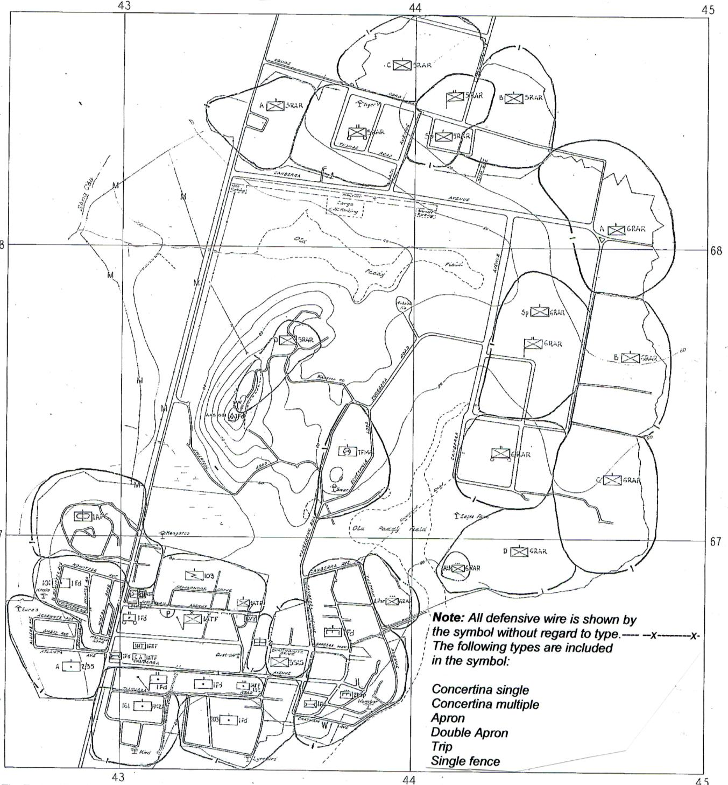
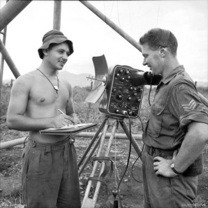
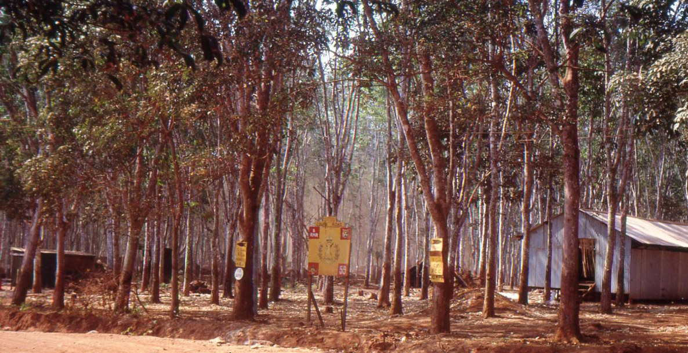
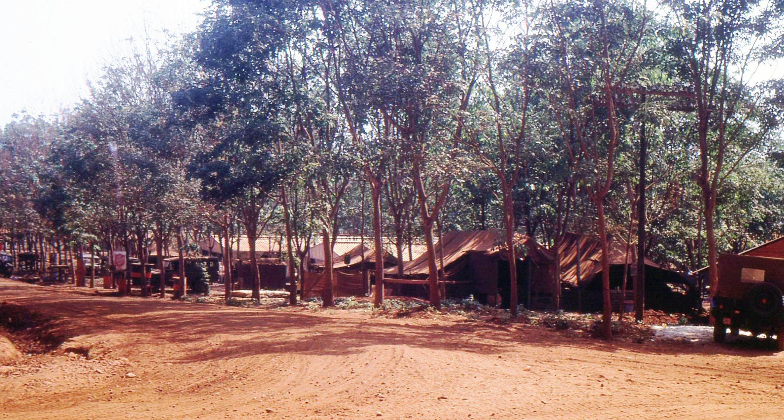
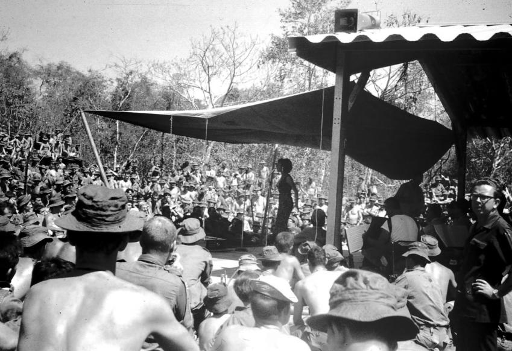
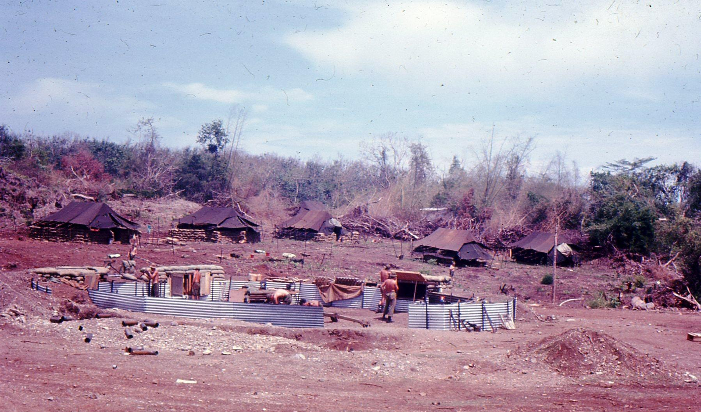
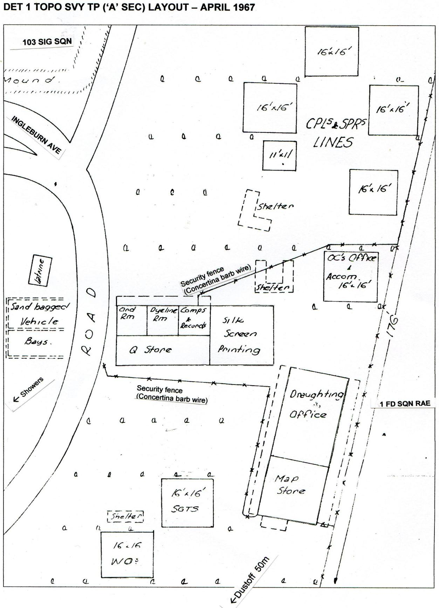
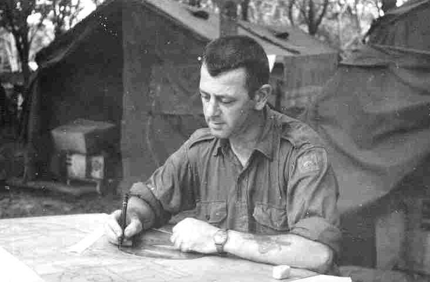
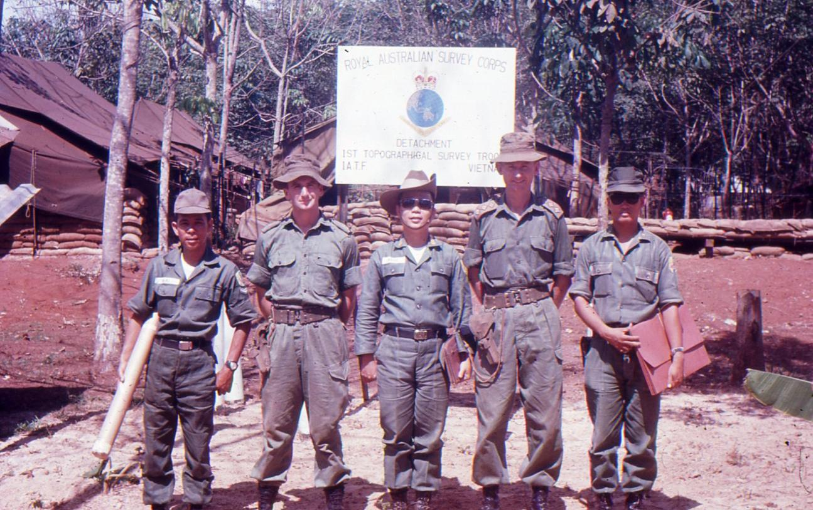

The Royal Australian Survey Corps at Nui Dat
The first Year
1966-67
PART 3 – ESTABLISHED
A personal reflection forty years later… Bob Skitch
PROLOGUE and DEDICATION It has taken me forty years to decide to commit my Vietnam story to paper. Why so long you may well ask. My only response to that is that I was getting on with my life post Vietnam, my family, my work and my community involvements. And yet those twelve months in Vietnam have always sat in the back of my mind and I doubt whether a day has passed when I haven’t reflected almost subconsciously on some incident great or small or person I came to know from that period of my life. My account is based upon several sources – my Commander’s Diary that was discontinued in August 1966 by direction from higher authority; my monthly operational reports to my Directorate and to Headquarters Army Force Vietnam, my date pad desk diary (unfortunately pages missing from mid March to mid May 1967) and various letters and documents included as annexes to this account.
Commander’s Diaries and monthly operational reports (without annexes) can be accessed through Internet on the Australian War Memorial data base. Also I made reference to and extracted from my own Army Journal article Operational Mapping and Surveys, South Vietnam 1966 to 1967 published in 1968 and to the official history of the Royal Australian Survey Corps Australia’s Military Mapmakers by Dr Chris Coulthard-Clark. Also I referred to other recent writings on the Vietnam conflict to confirm dates and some names.
Of course it would be a very dry account were it limited to simply extracts from those documented sources. My personal recollection of the people with whom I served in my own unit, the Detachment of the 1st Topographical Survey Troop and others with whom I had personal dealings on the Headquarters of the 1st Australian Task Force and a number of US headquarters and units remain as clear in my mind as they were on the day I departed Vietnam and form the ‘glue’ of my account. I clearly remember things that were said, comments made and the general ethos that prevailed within the Nui Dat base at that time. Lastly I remember also how I felt about many of the things that took place, my disappointments, frustrations and positive elations. In retrospect now I reflect on the remarkable effort of the sixteen soldiers with whom I served in the 1st Topographical Survey Troop who carried out their exacting role in incredibly trying and adverse conditions of climate and circumstance without complaint or criticism and achieved outstanding results.
Finally I reflect on the continuing encouragement given to me by my wife Wendy who with our one year old daughter endured the loneliness and frustrations of twelve months enforced separation living in a small army apartment in Sydney. Never at any time in our weekly, occasionally fortnightly, letter or voice tape communication transmitted through the hopelessly inept postal system did I hear a word of complaint or domestic concern yet knowing full well that there must have been many situations that may have warranted some off-loading on a distant husband.
I dedicate this account first to my wife Wendy and my eldest daughter Sarah Jane who didn’t know a father until she was twenty one months old when a strange man invaded her life.
And secondly I dedicate this same account to the band of men who served with me in Vietnam; the men of the Detachment 1st Topographical Survey Troop and whose names appear in the pages of this account.
MAP 1 – Frontispiece
1 ATF BASE AREA EDITION 3 Original scale NUI DAT 1:5,000

Grid squares 1,000 metre
WAR IN VIETNAM – A Surveyor’s Story: The Royal Australian Survey Corps at Nui Dat The First Year, 1966-67 PART 3 – ESTABLISHED….January to May 1967
JANUARY 1967
After Christmas
Boxing Day – 26 December and my wife Wendy’s birthday. Did I attempt to recognise that day in any particular way? I have no record of doing so but perhaps I wrote a letter or added a further message to a voice tape. Having one’s birthday on the day following Christmas in Wendy’s mind made the day the non-event of the year so I always tried to make something of it – a personal present or maybe dinner out somewhere. In subsequent correspondence Wendy commented that Christmas Eve in our army flat at Clovelly was a lonely event spent with 18 month old Sarah and a small Christmas tree. To lighten the occasion against a background of recorded Christmas carols, they opened a few of the small presents from under the tree. Christmas day may have been a little more festive.
At Nui Dat it was back to work. My diary briefly records: Trisider computations, 1:25,000 map revision and Tellurometer measurement to an artillery point in the village of Dat Do (9 kilometres south east of Nui Dat) from AASV 001 – an easy one with our now increasingly competent and reliable artillery surveyors occupying Dat Do. In the afternoon a concert party came to Nui Dat. I cannot recall whether I attended – I suspect not.
We commenced another survey task that required no great precision but provided on-going work sporadically for some weeks, possibly until my final departure. This was the running of Signals telephone lines, undertaken by Corporal Firns. Field lines over the task force base area had proliferated since May and I am not sure whether Signals had maintained anything but a sketchy record of their location. Initially telephone cables were simply laid on the ground, even buried in shallow trenches but in December some were being elevated on poles. With our fully contoured cantonment survey plans now in their second edition and being progressively maintained telephone lines were yet another component to add.
Between Christmas and New Year I landed the job of preparing a Summary of Evidence concerning two private soldiers from within the headquarters who, for offences I cannot now recall, were to face a court martial. In the circumstances I found it all a bit distasteful, a pointless exercise. I think our Task Force Legal Officer (quite a nice bloke) might have agreed with me, however, discipline had to be maintained.
The New Year
I don’t recall New Year celebrations being a big deal in the Task Force. The messes kicked on a little into the evening and perhaps I heard some whooping going on at midnight. New Years Day was a general rest day but then it was a Sunday and my diary notes that our draughtsmen continued working on the Task Force history annexes and we installed new lighting in the draughting office – our recently acquired fluorescent table lamps. Perhaps we might have had another roast chook dinner. Certainly by Monday we were well and truly back into our programmed work.
On 2 January we were visited by a contingent of the US 66 Engineer Company from Long Binh for the ostensible purpose of ‘appreciating the silk screen printing process’. The contingent comprised Lieutenant Peter Hart (Executive Officer), Warrant Officer George Butze (I/C Reproduction Platoon), Staff Sergeant Watson (Reproduction Platoon) and Sergeant Johnson (Cartographic Platoon). I think they were moderately impressed by the versatility of the equipment and they certainly enjoyed our hospitality. They stayed overnight and returned the following day maybe a little worse for wear.
Changes in Command and Headquarters Staff
Some significant changes in command and staff within the headquarters of the 1st Australian Task Force took place in January as senior staff completed their twelve month (or even longer in some cases) Vietnam tour of duty. Brigadier O.D. Jackson returned to Australia and was replaced by Brigadier Stuart Graham. The GSO1 Operations, Major Dick Hannigan was replaced by Major Stan Maizey and in March, a new appointment was made, Major Kayler-Thomson as Officer Commanding the newly created but provisional Headquarters Company and Headquarters 1ATF Camp Commandant. The Commanding Officer of the 1st Artillery Regiment, Lieutenant Colonel Cubis (Dicky) had departed the Task Force unexpectedly some weeks before and in January was replaced by Lieutenant Colonel Begg.
Brigadier Jackson left the Task Force without fanfare of any sort. I suppose that was his wish. I do not recall any sort of ‘send-off’ function in the mess nor did he visit any of the headquarters units as a farewell gesture. He simply announced at his last afternoon briefing that he would be departing the following day; I don’t recall him making a speech of any sort – that was not his way. Jackson, before the arrival of the Task Force in May, had been commander of Australian Arny Forces Vietnam in Saigon and with that the Australian Army Training Team, taking that appointment at the time 1RAR was deployed to Bien Hoa. Major Hannigan had been a GSO1 on his headquarters.
The new commander Brigadier Graham was a very different personality. He was certainly given to speaking his mind, often, I thought, in an inappropriate way. His red hair and ruddy complexion seemed to suggest out-spokedness and that seemed to be his mark. I don’t recall seeing him in the mess very often. Jackson most afternoons would spend twenty minutes or so with one or two of his staff having a modest drink before dinner. But Graham was rarely there. The new GSO1, Major Stan Maizey (Stan the Man) was also a contrast with his predecessor, Dick Hannigan. Hannigan was a quiet, thoughtful and undemonstrative officer, very well respected by his staff. Maizey was loud of mouth, could be abusive and liked to make his presence felt. Despite this I found him supportive of the Troop and appreciative of its work.
I had known Major C.D. Kayler-Thomson before Vietnam. Kayler, as he was known with some affection, was on the staff of the Jungle Training Centre at Canungra at the time I attended my Officer Qualifying Course although he was not part of my course directing staff team. Nevertheless I came to know him in the mess, partly because he had served with my cousin John Mules in the Middle East and New Guinea. He had been awarded the Military Cross in Korea and with that he had just about every other campaign medal ever issued by the Australian Government during and since World War II. Kayler was in army terms, an ‘old man’, which probably meant he was just short of fifty. He told me at one time he was appointed to his role at Nui Dat to clean up the headquarters area and get some order into it. I had to agree that it certainly needed that. Others would maintain that he was simply a medal seeker and wanted to add the two Vietnam medals to his already long array. Perhaps there was some truth in that also. Pleasant to know though he was, one certainly didn’t truck with him – he commanded respect. In the event, Kayler served only forty days in the theatre, returning to Australia shortly before my own return.
Our work continues
It was a relief to have cleared our tables of the Task Force history project. Although I had passed these over to Captain Hutchinson on 6 January, inevitably some arrived back the following day for a few more adjustments but finally we saw the last of them. The never ending task of the cantonment survey with its various spin-off products continued as did the plotting of Viet Cong tracks and tunnels, five combat after action report annexes, 1:25,000 map revision overprints and map annexes for forth- coming operations.
A task which gave me considerable pleasure to see completed was the second edition of Xa Long Phuoc, the village a little east of Hoa Long, three kilometres south of the Nui Dat Task Force base. Because it was unrelated to any forthcoming operation and was a village fully under Task Force control I was able to have 3000 copies of the map printed by the ARVN Engineer Topographic Company. My report for January comments: The quality of the printing by the ARVN unit is of the highest order and reflects upon this well trained and managed unit. I included Xa Long Phuoc Special as an annex to the report.
1 ALSG Cantonment Survey (Vung Tau)
We had had several previous attempts at commencing a full cantonment survey of the ALSG but without the support of Task Force headquarters or at least something better than grudging support the task had not progressed. As far back as June it had occurred to me that such an undertaking would represent a useful ‘background’ task and in October an arrangement had been made with 24 Construction Squadron RAE based at Vung Tau to carry out the ground survey work. Some sort of start was made but the Squadron soon recognised that they needed a bit more direction than the few steps we had given them on a sheet of paper. Warrant Officer Rollston and Corporal Firns had spent a few days there giving their construction surveyors some training in the techniques we had developed on the cantonment survey of Nui Dat but even after that progress was slow to the point of being non- existent. Perhaps it was as well that little real effort had been put in to the task since major engineer work was being undertaken with sand-hills flattened, sealed roads constructed and numerous Lysaught huts constructed. A veritable township was being constructed in the sand-hills.
In January a formal request from ALSG headquarters to Task Force headquarters for a comprehensive survey of the back beach cantonment area finally put the task onto our schedule. Initially I thought that we could use photogrammetry and the Zeiss Stereotopes to produce the plan and we obtained some runs of fairly large scale vertical photography flown very promptly on request to the US 23rd Recce Tech Squadron. Establishing a pattern of ground control in the secure ALSG area would have presented few problems and of course there were no rubber trees to obscure the detail. One look at the resulting air photos showed that a photogrammetric solution was out of the question. The reflectivity of the disturbed sand simply obliterated all detail and rendered it impossible to set up stereoscopic models even on the Stereotopes. So it was back to ground survey again using the same techniques we had developed at Nui Dat – 3rd Order chain and theodolite control traverses; tacheometric traverses along all tracks with detail filled in by plane table and tacheometry. Contours at one metre interval were captured concurrently with the plane table detail. Although now formally authorised the task proceeded only slowly throughout January. By the end of the month we had completed the control framework leaving only the more painstaking plane-table and tacheometric detail work to be done2.
Artillery survey
Our relationship with the US Target Acquisition Battalion at Long Binh developed further in January resulting in Sergeant Campbell and L/Corporal Joe O'Connor being detached to the battalion for a fortnight for the purpose of 'orientation in US survey methods’. I am not sure that we gained a great deal from the detachment and in many respects we with our small numbers had probably achieved as much as that far larger unit had achieved. Security of field parties was as great a concern to them as it was to us and even more inhibiting. Position and orientation for artillery fire support bases remained a concern for them as it was for us. This led to a somewhat bizarre solution being proposed by Artillery Directorate in Canberra.
Captain Barry Campton had recently been appointed 2IC of the Detachment 131 Divisional Locating Battery and in mid January called on me to discuss the possibility of heliborne Tellurometer measurement. He was aware that some sort of proposal for getting position and azimuth into fire support bases was being hatched in Canberra. Barry was a nice bloke but not a surveyor. I think Lieutenant Peter Saddler, the artillery survey section OC had returned to Australia and Barry Campton was administering command of that section as part of his 2IC duties. I gave him a fairly thorough brief on all we had achieved during the preceding eight months, Operation Trisider and of course the attachment of five of his own surveyors to the Troop and how we were using them. I also suggested that he might accompany me on a visit to Long Binh to both the 66 Engineer (Topo) Company and the Target Acquisition Battalion. Not surprisingly Barry was attracted to the idea, however, he seemed to have some trouble getting permission from his own masters to undertake the trip. I recall him telling me that he was told to submit a written brief stating the benefits that would be gained from the visit. The three day visit took place on 26 January, first to 66 Engineer Company and the headquarters of Colonel Hritzko where I was surprised to find Colonel Hritzko's predecessor, Lieutenant Colonel Benton visiting. Colonel Benton had returned to Vietnam with a scheme for extending survey control into fire support bases using photogrammetric stereo-triangulation. All of this was very relevant to Barry’s interest.
Routine draughting tasks continue
Routine though they may be, but important to the headquarters. After action report map annexes were prepared for Operations Hayman, Ingham and Canary, most of these now printed on the screen press. Eight revision overprints of the 1:25,000 enlargement series were prepared and printed down on map stock. My January report comments that revision information is taken mainly from intelligence photography flown for specific operations and after stereoscopic inspection transferred to the Picto Series. From the Picto Series the information is re-draughted onto the L7015 enlargement series and the overprint prepared directly from this map sheet, accepting into the overprint such paper distortions as occur in a freshly issued map from the bulk holding. Some valuable information has been obtained from unit intelligence collected on major operations.
Overprints for two forthcoming operations, Wollongong and Camden, were prepared and printed down in three colours on three maps, one being our own Hoa Long Special for Operation Camden. My January report notes that this task was effected comfortably to meet a deadline of 36 hours from the time the task was received. This included draughting and the pulling of 300 impressions of another overprint to release sufficient screens to meet the requirement. Clearly we were managing our screen printing process with increasing efficiency. In January 4830 impressions were taken from the screen printing equipment. Nevertheless, some difficulties persisted particularly the previously mentioned one of obtaining a draughting ink (black) of sufficient density to give a clear negative line on the screen in the exposure process. Exposure times were experimented with and only by employing heavier line weights in draughting the colour separate manuscripts could the problem be addressed, although not as well as one would wish since the quality of the overprint suffered somewhat.
It appears that 1ATF was not the only user of the screen printing process in the theatre. I note in my January report that in a recent intelligence report relating to a Viet Cong installation located by a sub- unit of the 11th Armoured Cavalry Regiment (US)…..captured Viet Cong stores and equipment included silk screen printing equipment. Captured Viet Cong maps and sketches I had seen previously had been printed somehow and I had surmised that in all probability they used some form of screen printing.
With the 1ATF Cantonment Survey (Nui Dat) now complete and progressively maintained ‘up-to- date’ on master sheets, the demand for by-products developed. One such by-product was the3:5,000 Nui Dat Special as a base map. Bulk stocks of the base map depicting topographical detail and cultural detail of a permanent nature was to be printed by 66 Engineer Company at Long Binh in February. Additional detail of a constructional, defence or tactical nature was to be overprinted on a limited ‘as required’ basis on the screen printer.
Of course the 1ATF Cantonment Survey could never be fully completed. In January the task was re- opened to survey in all machine gun posts and perimeter wire defences showing platoon and troop areas. Again the combination of plane table and tacheometry was used effectively.
Visit to Nui Dat by Director Military Survey planned
It might have been in November that I became aware that the incoming Director of Military Survey, Lieutenant Colonel F.D. Buckland, had sought permission to visit the Troop sometime in the New Year. Thinking back, I suspect that Colonel Macdonald had suggested to me during one of our meetings before leaving Australia that he would visit once we had settled in. However, he was due for retirement at about Christmas or soon after and Lieutenant Colonel Buckland who for the previous two years had served as Assistant Director was to move into the top Corps job. It had been practice in the Australian Army that, given the requisite years of service at the appropriate rank, officers retired one step in rank above their worn rank at retirement3. Hence Colonel Macdonald was to retire with the rank of Brigadier but unfortunately despite his long years of military service he had insufficient service in the rank of Colonel to qualify. It was a mark of the regard with which he was held by senior army staff that the problem was recognised and overcome by promoting him to Brigadier into a senior staff appointment some months before his retirement fell due. I am told that it was no sinecure; his intimate and thorough knowledge of the army and his long years of service as well as his remarkable personality allowed him to make a final contribution of some merit. But – back to Nui Dat. My diary tells me that I had entered into correspondence with the Director of Military Survey in January on both his impending visit and also the developing issue of our return to Australia at the completion of our twelve month tour (more on that later). Of course I needed firm dates for the visit so that I could make appropriate arrangements and appointments both within the Task Force and the various US headquarters and mapping units with which we had had an association. It was resolved that Colonel Buckland would visit from 10 February to 13 February and I immediately started planning an itinerary. I was a little disappointed that it wasn’t my mentor, Brigadier Macdonald who was to visit.
An unexpected visit
Visits to the Troop by officers from both our own headquarters and Headquarters AFV (Saigon) had become commonplace and warrant no special mention. However, on 10 January at 0800h my diary records a most unexpected visit, that of Major John Rowe, the previous GSO1 Intelligence, a position now held by Major Alex Piper. I cannot recall what it was that brought Major Rowe back to the theatre – something quite unrelated to his previous appointment – but I was pleased to see him and he showed a good deal of interest in our new location and facility, especially screen printing. Although my diary notes his visit alone I suspect that he was accompanied by the present GSO1 Intelligence incumbent, Major Piper.
Major Piper was an Infantry officer and I was aware of some resentment amongst Intelligence Corps officers at having their senior appointments filled by other than their own officers. Whether or not Alex Piper filled the GSO1 Intelligence appointment effectively I have no idea. I found him a pleasant person and he seemed to manage his intelligence meetings effectively although resting on the advice and input of his staff more obviously than his predecessor. Neither did he have (apparently) the close association with the new Task Force commander that John Rowe had with O.D. Jackson. I recall a pleasant discussion with Alex Piper one evening in the mess, probably much later than January. He was from Western Australia and had attended Guilford Grammar School, entering the Royal Military College, Duntroon on graduation. Why should I remember that? It was the school I nearly went to in my second year of high school – but didn’t!
Computations
I never felt all that easy with the burgeoning level of computations developing from our Operation Trisider. 1966 was well before the advent of electronic computation and all of our computing work was carried out using mechanical calculators – the Curta hand calculator of which we had three and the double Brunsviga; we had one rather antiquated model – and eight figure natural trigonometric tables. All computations were carried out twice, independently by two persons but even that wasn’t entirely fail safe. On 18 January an error was found in a Transverse Mercator bearing and distance computation where a correction sign had been applied in the wrong direction (plus instead of minus or the reverse) and this led to the checking of all previous computations; a very time consuming operation. I was often disappointed at some of the figure closures we were getting; frequently a metre or two in position rather than points of a metre I would have expected. Was it computational? Apparently not – double and triple checking yielded no further errors, at least none that I recorded. A month or so later it was discovered that two of our Curta calculators were occasionally slipping a digit – further reason for computational concern.
Camp development and creature comforts
Always there was more work to do in developing our work and accommodation facilities. Across the track and adjacent to our shower block our friendly Engineers installed a hot water ‘chuffer’; a 44 gallon drum on its side with a fire pit underneath, on top a funnel at one end and a pipe at the other. A bucket of cold water poured into the funnel produced a bucket of hot water from the pipe. There was nothing novel in this – most of our survey base camps over the years had such a device created at an early stage. It was great though to have a hot shower after nearly eight months without one. Sand bagging and the strengthening of overhead cover on our protection pits had to continue – there never seemed to be an end to that task.
In the early morning of the 20th an ‘incident’ occurred on the perimeter of 1 Field Squadron (RAE). I was never clear what the incident was, however, we were directed to stand-to morning and evening for a few days and the logic of that was a little beyond my comprehension since the Engineer perimeter was very internal. I suspect the ‘incident’ was the incursion of a wild pig which one occasionally saw rooting around within the Task Force base.
My diary notes that on Sunday 22 January we had a cricket match – against whom and where I have no idea but I suspect it might have been against our Engineer friends across the wire. Army Engineers have an enviable reputation for working hard and playing hard and our Engineer Field Squadron neighbours followed that tradition. We enjoyed a standing invitation to join them in their Friday evening ‘happy hour’ in each of their three messes and I occasionally did so. I suspect our warrant officers and sergeants visited more often and our corporals and sappers less frequently.
Another threat – we come under scrutiny again – and a tragic outcome
Changes of command and staff usually result in some policy changes – new broom sweeping clean perhaps! It was common knowledge that Brigadier Graham disputed the chosen location of the Task Force and no doubt the recently appointed members of his staff agreed. However, he could hardly pick it up and move it else where. Clearly also he had a problem with the minor units surrounding the headquarters and we, the Survey Troop, were one of those.
The appointment of DAA&QMG had been split into its separate functions, that is, a DAAG (personnel) and a DAQMG (materiel and logistics). Major Frank Crowe continued as DAQMG until the end of January and Major Don Bourne (actually posted against the Reinforcement Unit and allocated to the task force headquarters) undertook the DAAG role. Major Bourne was seen as something of a character with a ready quip to suit every occasion. At the time many of the movies coming into the Task Force were labelled ‘adult westerns’ and to the question ‘what made them ‘adult’, Major Bourne responded that all the horses were over 21! Why do I remember this bit of trivia? – Major Bourne was to cause me more than a little grief and if I was to have harsh thoughts about him as a result, I was to regret that later. Nevertheless, I didn’t particularly like the gentleman and found his humour, ever though it may have been clever enough, often supercilious and inappropriate.
On 12 January he called a meeting of minor and sub-unit commanders to discuss the relationship of minor units to both the headquarters and the provisional Headquarter Company, the latter to have the responsibility of administering the headquarters staff in all ‘A’ and ‘Q’ matters. That the HQ Company was under-staffed could hardly be disputed, however, the position put to the meeting by the acting DAAG was that the administrative staff, and maybe the Q staff of each minor unit and sub-unit would be detached to the HQ Company, the OCs of each minor unit become a level 3 staff officer on the headquarters with a limited command responsibility for the technical aspects of their previous unit. I found the idea totally unappealing. No specifics were stated at the time; they were to follow later.
Major Bourne wandered into the Troop one morning maybe a week or two later and looking around at what we were doing announced that units such as mine were a luxury the Task Force couldn’t afford. I thought ‘here we go again – he is going to have us RTA and be replaced by cooks and clerks’. But no –his plan as previously outlined at the briefing on the 12th was to integrate us into the headquarters, withdrawing our administrative staff which at the time consisted only of Corporal Peter Clarke and our cook, already assigned to the headquarters kitchen and putting them into the Headquarters Company (which was really non-existent).. We had already lost our storemen, thankfully replaced by our lithographic tradesmen. The Troop (detachment) would then be re-titled 1ATF Topographical Section, possibly combined with the Task Force Intelligence Section. Perhaps Major Bourne didn’t articulate all of this at the time but I could see that what I have outlined would be the inevitable outcome. If this were to happen I felt that the integrity and operational independence of the Troop would be lost. My own appointment and that of those who were to follow me would be reduced to a staff officer ‘survey’ with responsibility for the topographical section. I raised the proposal with my ‘staff direction’ officer, Major Alex Piper, and no doubt discussed it with my operations colleague Captain Ian Hutchinson, but found their position (certainly that of Major Piper) on the issue ambivalent and noncommittal.
The proposal seemed to persist for quite a while; perhaps even to my final departure from the theatre although nothing formal happened. Perhaps it didn’t have Graham’s support – he had bigger things on his mind. Of course, since we were an independent unit on the Order of Battle, to fully integrate our personnel into the Task Force headquarters would probably have required at least Army Headquarters (Canberra) approval requiring considerable administrative effort by both HQ 1ATF and HQ AFV. My own resistance to the proposal was on record. Major Bourne tended to make oblique reference to it each time our paths crossed but beyond that it wasn’t raised at any level. However, on 14 February a tragic event occurred which apparently brought the proposal to its end.
Major Bourne spoke often of his desire to serve with infantry in one of the battalions and he got his wish on 8 February some three months or so after his arrival in the theatre. He was appointed a company commander in 5RAR an appointment he was to hold for only one week. Soon after taking over he called an ‘O Group’2 together and they proceeded to a location on the outskirts of a nearby hamlet (An Nhut on provincial highway three kilometres south of Nui Dat) for what specific purpose remains unclear, at least to me. Mid-afternoon just as they were to return to base, one of the group in picking up his back pack from the ground triggered an ARVN (friendly) mine. It exploded, killing three, the company OC, the 2IC, the artillery forward observer (NZ) and seriously wounding several others. The general comment at the time was ‘what the hell were they doing there’? 5RAR were not involved in an operation at that location. Acceptance of the death of comrades in action becomes part of life in a theatre of war and we lived with that on a daily basis. I was at arm’s length from most of it although I was never at ease with my own soldiers when on survey operations away from Nui Dat. This incident shocked me greatly and I couldn’t help but reflect on our very non-tactical withdrawal from AASV 008, Binh Gia, across uncharted paddy when attacked by bees some weeks before. It was so totally unnecessary.
The tragedy was heightened for me by the fact that I had spent some time in Saigon only a week or two before the event in the company of one of the officers, a captain, who lost his life in the incident. We had had dinner together and I remember discussing our respective families. He spoke of his small child he had recently left in Sydney. He was a quietly spoken person who had misgivings about the war, its purpose and objectives. He was posted against the reinforcement unit and was awaiting allocation to a battalion. I wondered a little at how he would fare in a combat infantry role although that was what he had been trained in to do. He was very interested the Survey Troop and what it did. Our conversation must have been overheard by an Intelligence Corps major, the very same one who had conducted the pre-embarkation intelligence brief. He approached our table and warned us that our conversation might be heard by the Viet Cong to their advantage and we should change the topic. In a BOQ – I wondered!
The captain and I parted company and returned to our respective BOQs before curfew time, not to see each other again.
That Minefield!
It was in late January that I became aware of the Dat Do minefield plan. There had been a briefing of major unit commanders by the new Task Force Commander, Brigadier Stuart Graham of his plan to deny Viet Cong easy access from the east to centres of population south of the Task Force base by constructing a barrier minefield from the village of Dat Do south to the coast, a distance of eleven kilometres. Some 20,000 M16 ‘jumping jack’ mines were laid by engineers from 1 Field Squadron assisted by the assault pioneer platoon of 6RAR. About half had anti-lift devices in the form of an M2 hand grenade beneath the mine. The mines were to be laid in a strip between two barbed wire fence barriers between 70 and 100 metres apart each consisting of four coils of concertina barb wire, two coils high and two coils wide.
The purpose of minefields is principally to deny access to the enemy by creating a barrier across which movement becomes very hazardous if not impossible – never completely impossible. Minefields are marked with the traditional skull and cross-bones symbol. I do not know whether that applied to the Dat Do barrier fence or not. Mines must be capable of being lifted – disarmed – because eventually minefields must be cleared and restored safe again. Another important minefield principle is that the entire field must remain under surveillance and be covered by fire. I became aware of a lot of uneasy discussion concerning the proposal between headquarters officers and clearly there was an undercurrent of criticism of the concept. There may have been mention of the minefield at the Commander’s daily briefing (less frequent than during O.D. Jackson’s time) but certainly details of the proposal became common knowledge and was favourably reported in the Australian press – what would they know?
So – what was wrong with building a barrier minefield from Dat Do Village to the coast? The task of keeping a minefield of that length under surveillance and covered by fire in any circumstance would be extremely difficult and with a two battalion task force quite impossible. So this task was allocated to the ARVN forces, ground and air, a concept that was greeted with derision. As time passed vegetation growth filled the concertina wire until in a very short time the fences resembled two huge hedge-rows. Mines by design are capable of being lifted and indeed the Viet Cong did just that. The minefield became a Viet Cong arsenal with the mines being used against our own troops with disastrous effect. Why did the Task Force Commander persist with the scheme? No doubt his senior unit commanders, the battalion Commanding Officers and the Officer Commanding 1 Field Squadron (RAE) who had the unenviable task of supervising the construction of the minefield and the laying of the mines must have raised some objection. Graham was a strong personality and had the authority to prevail. Prevail he did causing casualties to our own troops during that first year and the succeeding years of the war until the withdrawal of Australian forces in 1971 and also in the final instance of clearing the minefield.3 The Troop’s minor role was to plot the barrier minefield on the various boundary maps and it became a simple enough task to identify its very obvious route on all subsequent aerial photography.
The end of the month
And so the month of January drew to an end. I had a further visit to 66 Company on the 27th and then on to Tan Son Nhut and the ARVN Topo Company, mainly to make arrangements for the visit of the Director of Military Survey (D Mil Svy). There were always plenty of reasons to justify such visits and I do not recall an occasion when there was any objection from Task Force headquarters. By January direct fixed wing air transport from the newly created Luscombe Air Field at Nui Dat could be easily arranged. I always found the visits enjoyable and most times there was a little social overhead.
FEBRUARY 1967
The two events that occupied both my thinking and our resources in February were the visit of the Director of Military Survey and the construction of our sorely needed second work building. I am not sure that I was out to impress Colonel Buckland but I certainly wanted to ensure that his three day visit was worthwhile. Although never having worked under his direct command we had a little bit of shared history which even if he had no recollection of I certainly did – he recruited me. In 1955 the Survey Corps was undergoing its first major post WW1 expansion and did so by means of employment offers with ten months training in the ‘Commonwealth Vacancies’ columns of the city newspapers. Working as a survey assistant with the Western Australian Railways and looking for a change I inquired and was invited into Swan Barracks for interview by the Deputy Assistant Director of Survey, Major Frank Buckland. He told me of all the exciting activities the Survey Corps was involved in. It only took one interview to convince me and I was in. Colonel Buckland had had a number of appointments in the years leading to his directorship of the Corps, in Singapore with the British Army, in South Australia as DAD Survey and OC of Central Command Field Survey Unit and finally in Survey Directorate. Generally known as ‘Bucko’ he had an unforgiving reputation – did not suffer fools lightly – but was something of an achiever. He pushed the Corps in a number of new directions both in the adoption of leading edge technology and off-shore defence aid projects.
On 3 February I visited Saigon to make final arrangements for Colonel Buckland’s visit, first with HQ AFV (the ‘Free World Building’) then to Tan Son Nhut and the US Maps, Charts & Geodetic Advisor of HQ MACV4 and finally Dai Uy (Captain) Ngoc’s 1st Engr Topo Coy ARVN. I had already squared away arrangements at Long Binh with Colonel Hritzko (now Assistant Chief of Staff Mapping and Intelligence Division USARV5 – I was particularly anxious that they should meet) and Captain John Anthis, OC 66 Engineer Company (Corps) (Topo). In Saigon Colonel Buckland was to be accommodated at a slightly up-market BOQ – ‘The Bryant’. I returned to Nui Dat on the 5th.
On 2 February Sapper Rotherham departed Nui Dat to return to Australia and undertake his battle efficiency training at Canungra. He wasn’t due back in theatre until the unit changeover in May and I don’t think I saw him again after his departure. Although not wishing to diminish the efforts of our allocated screen printing contingent, Lindsey Rotherham’s contribution to the success of screen printing bringing it from a ‘hit and miss’ operation to a guaranteed reproduction process was beyond valuable.
Continuing our role despite distractions
Of course production work continued unabated throughout the month despite commencing the construction of our second building. I had to ease back on the ALSG cantonment survey and withdraw Corporal Firns, L/Corporal O’Connor and Sapper Chambers to commence a detailed survey of the perimeter wire. Corporal Duquemin continued with the ALSG survey using Engineer sappers from 24 Construction Squadron. My diary notes that our two long wheelbase Landrovers were listed for a repaint – was that motivated by Colonel Buckland’s impending visit? I don’t think so. Screen over-printing of 1:25,000 maps continued as well as the despatch of over-print manuscripts to Survey Directorate for incorporation into a second edition.

1ATF operations were trending well south of Nui Dat along Route LTL23 from Long Dien to Dat Do and south on Route TL44 from Dat Do to the coastal village of Long Phuoc Hai. Some very heavy 6RAR operations were to take place south of Dat Do in an area inappropriately named, the ‘Long Green’ since it appeared on the US 1:50,000 map as a six kilometre long stretch of dense forest linking with the Nui Dinh hill mass to the west. Photo inspection showed that the area was far from dense forest being mainly scattered clumps of scrub vegetation, no doubt thick enough to the infantry soldier. We commenced a series of photo edited enlargements of the villages of Dat Do, An Nhurt, Phuoc Loi, Phuoc Hai and north of Dat Do, the Horse Shoe Hill, the latter aptly named by 6RAR due to its shape. A 1:25,000 correction overprint was hurriedly prepared of the Long Green area and I recall taking a number of copies of the overprinted 1:25,000 map to Luscombe Field and passing them to Major Peter Smeaton, Executive Officer of 6RAR as he was boarding an Iroquois chopper for insertion into the Long Green operation. He thanked me.
Work continued on the Binh Gia 1:10,000 Special. To some extent this was a background job and I had negotiated its printing to be undertaken at the Survey Regiment in Australia. This was to become a nagging concern to me on return to Australia and I will explain that later. The usual demands for operation map annexes, intelligence overprints and operation after action reports annexes continued.
The 1ATF continuing cantonment survey was greatly helped by some very good vertical air photography at scale 1:5,000 coming to hand from ARVN sources flown by the Vietnamese Air Force. What a surprise! This was probably the best quality air photography I encountered during my entire tour. Apart from anything else the prints had been properly fixed.
We become builders again
On 10 February we made a start on our second tropical 50’ x 18’ work hut. This building unlike the first was to be fully enclosed and secured – no open fixed shutters down either side. Internally it was to be partitioned into a screen printing room, Q store, Orderly Room, OC’s office and a computing and records room. With Engineer help a full concrete slab was laid over two days, February 13 and 14. At the same time paths were formed between and adjacent to work areas, blue-metal laid and finally concrete poured. Building construction continued without hold-ups and by the end of the month it was 90% complete. Colonel Buckland witnessed the start of the construction and in my mind that was fortunate. Again Warrant Officer Christie was the appointed foreman and managed the project with good effect.
Visit by the Director of Military Survey – Colonel Frank Buckland
On 9 February I headed to Saigon to meet Colonel Buckland arriving the next day. I reported in to HQ AFV and over-nighted at the Bryant BOQ. The following morning I took a pre-arranged army taxi to the Tan Son Nhut international terminal and at 0930h he stepped from the Qantas 707 onto the incredibly busy tarmac and made his way into the terminal. He was in uniform – summer polyester – with red banded cap and georgette tabs on his collar – every inch the Colonel. He was very affable although clearly bewildered by the frenetic activity of the airport, a cacophony of noise, constant announcements blared out in southern American accents, frequently repeated in Vietnamese, groups of American soldiers waiting, waiting, perhaps to embark on R&R or simply having arrived fresh from the States, also some smaller groups of Australian soldiers in civvies waiting for their call to board. I took him to the baggage pick-up and collected his very light non-army bag. I had ensured that my army taxi would be waiting outside and we quickly escaped the terminal and headed for the Free World Building. I think he told me that he had visited Saigon once before, perhaps to attend a conference but the Saigon of then was different to what he was seeing on this day.
Our first call was to the Chief of Staff AFV (I have no record of his name) and then the Commander, Major General Vincent who affected a knowledge of what we were about at Nui Dat; affected, because I don’t think Vincent ever visited the Troop. Nevertheless pleasantries were passed and I suppose the overall war picture was discussed. All of the senior officers called on took pains to assure our Director of the vital importance they ascribed to our involvement. Vincent had some lunch brought in and after lunch we returned to Tan Son Nhut and called on Lieutenant Colonel Ruthe, the US Maps, Charts & Geodetic Advisor to HQ MACV. I had met Ruthe once or twice before but have no particular recollection of him now. Somehow the afternoon passed quickly enough and at about 1700h we boarded some sort of light fixed wing aircraft that flew us into Luscombe field at Nui Dat, arriving at the Troop at 1800h. I had had everyone assemble in the draughting hut in fresh greens (Warrant Officer Christie saw to that and my ‘batman’, Boots Campbell was almost immaculate) and sufficient cans of cold VB emerged to provide a welcoming drink. I introduced all present to the Director one by one – all wearing name plates – and soon after we repaired to the mess where a late meal had been kept. By February most of our meals were from fresh rations and had greatly improved. Only a few officers were present and perfunctory introductions ensured but little conversation. Visiting officers from the comfort of Canberra attracted little interest. Colonel Buckland professed weariness after a long day (he had left Australia the previous evening) and I took him to his tent, an 11’ x 11’, sandbagged of course, nearly opposite my own. We sat talking for a while; I think it was the first meeting I had had with him since the day in 1955 when he interviewed me as a potential recruit. I do recall that he took the opportunity to tell me that on return to Australia I would be granted 18 months civil secondment to the NSW Lands Department to consolidate my Surveyors Board exams (I had already passed the written exams) to become a licensed surveyor and after that the Singapore posting to the British Army mapping squadron based there.
The next morning, the 10th, was to be a busy one. At 0900h we were to meet the Task Force Commander Brigadier Graham in his well constructed bungalow. It was a meeting I will never forget. Graham was certainly very welcoming and said all the right things about my Troop and the role of Survey in the theatre. Buckland spoke of future plans for the Corps all of which was news to me so I listened intently. I guess Buckland must have finished off with some comment on Nui Dat or something related and it gave an opening for Graham to let forth. He was almost abusively critical of the positioning of the task force base, of the deployment of the units within the base, seeing our situation there as pretty hopeless. His trenchant criticism extended to his predecessor, Brigadier O.D. Jackson in a way that I thought was totally inappropriate. I sat and listened, as did Buckland. It finished and we left, somewhat blown away. Buckland commented to the effect ‘I never thought I would hear that’!

on the northern perimeter.
We moved on to the GSO1 Operations, Major Maizey, whom Buckland knew from some past association (everyone knew Stan Maizey) and then to the Commanding Officer of the 1st Field Regiment (Artillery), Lieutenant Colonel Begg. That was a more productive meeting. We discussed the very vexed issue I have referred to previously as ‘the artillery problem’ and my Operation Trisider. Artillery had recently introduced a gyroscopic theodolite that was to provide an azimuth based on true north to an accuracy of a minute of arc. They had chosen the British instrument called the PIM (Precision Indicator of the Meridian) made by the firm Cooke Troughton and Sims. For some reason it had not been brought to Vietnam and I gathered that its operation was not all that successful, requiring 20 minutes or more to settle down before a reading could be taken. It was easily thrown off by any small disturbance and the firing of a gun would throw it off completely. It was also very bulky, to the point of being cumbersome. Buckland mentioned another meridian indicator made by the Swiss firm ‘Wild’ that was thought to be more successful and that the Corps might trial one. I think that happened but I suspect it also failed to impress.
Our final meeting of the morning was with the Commanding Officer of 5RAR, Lieutenant Colonel John Warr. I had not previously met Colonel Warr although I had seen him attending pre-operational meetings with the Task Force commander. I don’t recall much about that meeting other than it was convivial and relatively short. We were back at the Troop by 1130h and I suggested to Colonel Buckland that he might like to take a drive to Hoa Long village, three kilometres to our south (our village). He readily agreed. Boots, who had driven us across to 5RAR and taken us on a short tour of the base area – Luscombe Field, past 6RAR and the artillery batteries; we may have stopped at one of our two teams surveying in the perimeter wire – was to drive us to the village. Boots very wisely suggested to Colonel Buckland that he exchange his red banded cap for a bush hat to make him less conspicuous. He readily agreed. We were of course armed as always, Boots carried his SLR, full magazines in his basic pouches and I my OMC with two full magazines in my trouser pockets. I

on the eastern perimeter
I gave the Colonel a copy of our latest Hoa Long village three colour map (1:5,000) and the defoliation map covering the gap between the task force base and the village. I advised the duty officer at the TOC (we now called it the CP by Graham’s direction) and set out in a sand-bagged Landrover. Colonel Buckland studied the maps intently as we made our way to the village and entered one or two of the winding tracks through the village. Villagers and children appeared at times, always smiling and welcoming. We didn’t stop, just kept driving and to the onlookers we could have been any of the frequently seen Uc-dai-loi casing the village. I was a little nervous and although I had in the back of my mind that we might proceed further south to Baria, the province capital, decided to return to Nui Dat – I didn’t want to lose my Director.
We had lunch in the mess with a few of the officers, Major Maizey more than likely, all a little more conversational than the previous night. Returning to the Troop it was time for the Director to inspect our work and operations in general – the current tasks on the draughting tables, the Q store, map store, survey records, screen printing (which I had ensured was functioning on a job at that time), orderly room, chatting with each of the soldiers he came across. He was far more ‘easy going’ than I had been led to believe. This took some time and following that we had a group meeting to discuss whatever burning issues members might care to raise. I had called in the three field parties we had out at the time including the group from Vung Tau engaged on the ALSG cantonment survey. The burning issue in most minds was that of postings on return to Australia and all were promised their posting of choice including removals for their family if that was needed. This was an undertaking given by the government. Timing of RTA and replacement was a further issue. There had been some conjecture as to whether the first wave of units serving in Vietnam would be replaced as a whole unit one for one or whether replacement would be on an individual soldier basis. We had already had some mid-tour replacements as a result of the introduction of the screen printing process as well as some returning for administrative reasons; discharge on expiration of an engagement, medical and compassionate. Not all would return in May. Those that arrived mid-tour would remain for a full 12 months so imposing the ‘stagger’ replacement system that had been prescribed for minor units and sub-units. Soldiers arriving as replacements for members returning in May would most likely have shortened tours, so locking in the staggered replacement system. The question and answer session was followed by a small party with drinks and a few plates of nibbles that had somehow been conjured out of the kitchen. All members were present including our attached surveyors from the survey section of the Locating Battery and perhaps one or two other invited guests.
Sunday 12 February Colonel Buckland and I departed Luscombe Field for Long Binh. It was at Luscombe, waiting for our small fixed wing aircraft to arrive (I am not sure whether it was one of our ‘Possum Flight’ Cessnas or a US air taxi service) that the impact of the war and the fact that we were in a war zone was dramatically played out before our eyes. A number of F16 Strike Fighters (Phantoms) had been active above us making repeated runs at a target in the Nui Dinh hills to the west of Nui Dat. I have no idea what the target was or what they were hitting it with; it might have been on the western side of the hill mass and well out of our vision. Clearly our own small aircraft would not be venturing into our air space while this was happening. Then we saw a huge flash of orange flame and smoke envelop an eastern spur of the hill mass. I thought for a moment that one of the Phantoms had jettisoned its bomb load at that point before returning to base and made this comment to the Colonel. The other two or three jets were gone and all was quiet. Our small aircraft arrived soon after and we boarded for Long Binh. Our pilot had also seen the incident; possibly heard something on his radio, and he deviated slightly to make a pass over the site at an elevation of a couple of thousand feet. It was clear what had happened. One of the departing Phantoms had ploughed into the feature. The ground below was blackened and smouldering. Already a couple of US helicopters were hovering close to the ground. We flew on and landed at Long Binh some twenty minutes later. Most likely I passed a comment to the Colonel and he acknowledged. There was nothing one could say. It was just another incident in a war. I doubt whether there would have been endless boards of inquiry to determine the cause or the reason. It was war time; not peace time.
At Long Binh we were met by Colonel Hritzko and Captain John Anthis of 66 Company. After the normal pleasantries Hritzko embarked on a very thorough and formal briefing of the role of the US topographical support units in Vietnam and in particular the terrain intelligence aspect of the two topographical companies, 66 at Long Binh and 256 at Nha Trang. Colonel Buckland was introduced to about all the officers and NCOs of the Company). A PhD qualified Captain (whom Hritzko called ‘Doc’ – introducing him as ‘Captain Doctor’) spoke at length on the rationale of the terrain work they were doing. It was certainly directed to the eventual post-war reconstruction of South Vietnam and he clearly believed in it. I noticed with some amusement that Colonel Buckland’s red banded cap and georgette patches on his collar seemed to attract some special reverence from the American officers with even Hritzko calling him ‘Sir’ despite being of equivalent rank. Nevertheless I had noted before that Americans throw the epithet ‘sir’ around without necessarily implying rank seniority. It was an eventful day and after dinner in the mixed ranks dining hut (officer’s tables were waited upon) we sat around a sort of common room in 66 Company for an hour or two in very general conversation. Very comfortable overnight accommodation was provided.
The following morning (13 February) we departed by US ‘Huey’ for Saigon (Tan Son Nhut) to visit the 1st Engineer Topographical Company ARVN and Captain Ngoc, landing directly into the Company compound on their prepared helipad. We were well and truly expected. Ngoc was waiting for us with a small honour guard which our Director was invited to inspect. It was an act of courtesy on Ngoc’s part and Colonel Buckland treated it with appropriate seriousness and respect. Again the red banded cap and georgette tabs, an adornment unfamiliar to the Vietnamese Army, seemed to imply a special level of importance. We were led to the inevitable morning coffee with light delicacies laid out on a linen covered table and then a tour of Ngoc’s unit. Ngoc with his excellent command of American English talked easily to Colonel Buckland who responded in similar fashion. Buckland thanked him for the support he had given our Troop and complimented him on the quality of the work he had done for us and also the printed work he was seeing on the tables before him. Indeed, it was very good. We were due at the international terminal at Tan Son Nhut at 1230h but on arrival found the Qantas return flight to Australia would not depart until the following day. Such were the vagaries of flight scheduling. I had needed to return to Nui Dat and saw little point in remaining away from my unit a further day. Colonel Buckland had a further night at a BOQ in Saigon and departed the next morning. I arrived at Luscombe Field Nui Dat at 1700h.
I felt very comfortable with my Director’s visit. In three days he had seen every aspect of our work; had visited and spoken with all officers and NCOs, Australian, American and Vietnamese with whom we had an association. He had had ample time to talk to and socialise with all members of the Troop and on leaving expressed his satisfaction with the Troop’s performance and its general acceptance in the theatre. On a personal note he had conveyed to me what was to be my future on return to Australia. I was to remain in Sydney and would be seconded to the NSW Department of Lands for 18 months so that I might qualify as a licensed surveyor, following which I would be posted to Singapore for two years and then Staff College. I felt that my military career was well and truly on track.
Back to work
Returning to Nui Dat I was pleased to see the progress achieved on the construction of our second tropical hut. The pouring of the concrete slab was completed on the 14th and the forming of the walking pathways was well underway with blue-metal standing by for laying as a base ready for further concreting to commence on the 15th. My diary notes that maps of Hoa Long were to be despatched to Survey Directorate ‘safe hand’ with Captain Rhys Thomas (RAE, CMF). Captain Thomas had been attached to the headquarters some six weeks before and might have been the first CMF officer to undertake a Vietnam tour. We had had a number of conversations both in the mess and at the Troop – he was very interested in the Troop’s deployment – and I had come to realise he was disappointed with his role (or one might call it a ‘non-role’) within the headquarters. He had completed the battle efficiency training at Canungra although that alone would hardly have qualified him for a combat role but he would have preferred to have been with an Engineer unit, 1 Field Squadron by choice, however, at that time there were restrictions on the use of reservists in an active theatre.
Task Force ‘strays’
Digressing a little further another interesting CMF officer I came to know (probably in about October ‘66) was Captain Mike Wells. Mike was a trained commando from a CMF commando unit at Newcastle, NSW and wore the green beret. Mike had had some months with the Training Team and I was never clear what his role was within the task force headquarters other than as a liaison officer with the ARVN in Baria. He may have seen some limited action with the Training Team but he too was disappointed with his tour. We had frequent discussions and he told me a little of his background although I cannot remember what his civilian employment had been but he struck me as a very ‘down- to-earth’ officer, plain speaking and approachable, and with my limited experience I thought he might have been better employed. O.D. Jackson seemed to like him and I often saw them in conversation together in the mess. Mike Wells was to become something of a ‘soldier of fortune’ and featured prominently many years later in a very contentious operation training a para-military waterfront strike breaking force in Dubai.
Another self-proclaimed ‘soldier of fortune’ to arrive at Nui Dat was Captain Noel Dudgeon. Noel was ex-British Army who had somehow transferred to the Australian Army purely for the purpose of serving in Vietnam. Noel served at the headquarters in a Q role but in June ’67 managed to get into the Training Team for the remainder of his tour. Perhaps it is overstating the case to say that all of these ‘irregular’ officers were shunned by the regular RMC (or OCS) trained officers on the headquarters, or elsewhere in the Task Force, but certainly they seemed to be treated with some disdain. Their allocation to the Task Force was non-specific, as if they were there simply to experience exposure to a war zone. Perhaps also, because I was an officer ‘not of the cloth’ as it was once put to me, these ‘strays’ came my way. Some years later I ran into Noel in Australia. He had remained with the Australian Army after Vietnam and in 1982 was appointed in charge of the ceremonial aspects of the Commonwealth Games in Brisbane. I think he retired at the rank of Major and as a civilian in 1988 he took on the job of organising ‘The Great Camel Race’ from Alice Springs to the Gold Coast for the Bicentennial Year. If nothing else, I certainly got to know some interesting people during my tour at Nui Dat.
Despite our concentration on building construction tactical work had to continue, operation overlays, intelligence overprints, cantonment surveys at both Nui Dat and Vung Tau and large scale mapping of village areas. A task of interest we undertook on 18 February was the plotting on 1:50,000 maps, the journeys of Nan Hung. Apparently this gentleman was a high ranking North Vietnamese officer that had been visiting Viet Cong units throughout Phuoc Tuy Province during the preceding several months. The sketches and notes had been captured by either our own forces or US forces and passed down the intelligence line to 1ATF. No one had been able to make much sense of them and I suppose the concern was that Nan Hung’s visit might have been a precursor to another major effort to dislodge the Australian Task Force. I don’t recall that we made much more sense of them than the intelligence units through which they had passed and about all we could do was to indicate by a series of blobs on the map where it appeared he had visited. In intelligence circles we seemed to have developed a reputation for having an uncanny knack of interpreting all sorts of scrappy information and depicting it onto maps. We could only do our best.
A Standing Operating Procedure (SOP) for the Troop
Military units tend to generate a range of written orders and instructions – ‘Routine Orders (Part 2)’, a couple of pages which issue periodically and contain fairly ordinary ‘must know’ information; ‘Standing Orders’, usually a heavier tome which covers the structure and organisation of the unit and the daily routine’. What was to me at the time a new type of order, a ‘Standing Operating Procedure’ (SOP) had joined the milieu of military orders. I suspect that we learned the term from the Americans; I certainly had not seen such a device circulating in Australia, at least not within survey units. The SOP was in some ways broader than Standing Orders and covered a number of technical matters that one would not find in Standing Orders. As the name suggests an SOP prescribes how the unit will operate. They are designed to reduce the need for detail in operational orders where that detail remains the same for all or most operations. On 18 February I embarked on preparing the Troop’s first SOP which I hoped might get the imprimatur of the Task Force Commander. I note that the copy I still hold is marked ‘provisional’ and ‘draft’ which seems to indicate that I had some doubt as to whether its contents would be accepted by higher authority and to the best of my recollection my ‘provisional draft’ version did not improve in status during my remaining time in theatre. Nevertheless, it served a purpose within the Troop. My copy also contains a number of ‘hand amendments’ in my own hand, for example the term ‘Detachment’ has been crossed out where it occurs and replaced by ‘A Section’, the latter the official name of the unit from mid-March onwards. My SOP (Part 1) covered Organisation, Role and Staff Control with sub-headings – Internal Organisation, Role, Characteristics, Tasks, Duties, Allocation within the Task Force, Discipline, Personal Administration, Unit Defence, ‘Q’ matters and Staff Direction (detailing the unit’s relationship with the Task Force headquarters). Part 2 covered Technical Procedures with sub-headings – Control Surveys, Cantonment Surveys, Application of Photogrammetry, Large Scale Maps, Map Revision, Reproduction, Draughting and Registration (that is, between layers of map detail).
The unit organisation I used as the basis of the SOP was the establishment amendment dated 5 December 1966 from Director Military Survey to the appropriate directorate in AHQ. It was this amendment to the original Troop establishment that neatly divided the Troop into two equal sections, ‘A’ Section and ‘B’ Section with a headquarters element. It rather cheekily proposed an increase in strength for ‘A’ section from the Detachment’s present 17 all ranks to 21 all ranks by restoring the two stores personnel and increasing the screen printing component by a warrant officer and a corporal. The warrant officer class two (survey) appointment had already been converted to a lieutenant 2IC. Needless to say the establishment increase went on ‘hold’ and the unit strength remained at 17 all ranks. I chose to write the SOP around the proposed ‘A’ Section establishment so that should the increase take place at a future point, the SOP would remain effective.
Why did I wait so long to develop my SOP? Perhaps it was because it wasn’t until our tenth month that I felt that the functioning of the Troop had developed sufficiently to be able to identify a standing procedure, especially in the technical areas but also in administration. Also I wanted to leave to my successors, due to start arriving in April, a record of how we went about our role so that the transition to the second year would be a smooth one. I cannot be sure that that objective was achieved for reasons I might go into later. (Standing Operating Procedure (Provisional) is at Annex M to this account)
Unfortunately the pages of my desk pad diary from 20 February to the 1 May are unaccountably missing and with that the day to day detail of our tour. Fortunately most things of significance are recorded in my monthly reports and it is on these that my continuing narrative and reflection must rest.
A fine young Sapper
On 20 February I submitted a confidential report on Sapper (Temporary Corporal) Brian Firns recommending this fine young soldier for promotion to substantive Corporal. Despite having incurred an offence – speeding on LTL1 for which he was apprehended by a provost and, unfairly in my mind, awarded a severe reprimand by the GSO1 Operations (who was required to hear any charge laid by military police), an offence that would have put paid to any further promotion for at least twelve months, his outstanding service more that justified his substantive promotion. Without it he would most likely have lost his temporary rank on return to Australia. I was delighted when he was granted substantive promotion before leaving the theatre. Brian continued in the service for a full twenty year term and finally retired as a Warrant Officer Class 2. Meeting him for the first time since Vietnam in 2002 it was clear that he was rightly proud of his military service.
An unexpected trip
I received a request from Colonel Hritzko through the Task Force headquarters (Major Maizey I would think) to brief a senior US officer (Major General T.J. Hayes (the third), Director of Topography and Military Engineering, Office of Chief of Engineering) on the role and functions of the Troop. I may have had a phone call from Colonel Hritzko or perhaps a signal message giving me a more comprehensive brief. Major Maizey in his bluff style certainly exhorted me to put on a good show and do it well. Perhaps for this reason and also because I am never confident of my ability to talk without detailed notes I prepared a two page written brief which I intended to verbalise to the general. Reading through that brief now a couple of paragraphs surprise me but at the time I must have thought I was on firm ground. They state…
As far as I know we are the only country using survey units in direct support at brigade level. ….To an extent in its own way, this has been something of an experiment. Some years ago our divisional artillery surveyors made a bid to increase and improve their own establishment to provide for 3rd order survey for the purpose of extending the basic control net in the area of operations. This proposal was presented to our military survey directorate for comment and it was immediately realised that Artillery were usurping our role as corps surveyors and were attempting to take on what was primarily a Survey Corps responsibility.
The requirement had been cited (identified) by Artillery and we prepared to step in and fill it. The problem was, however, what sort of organisation one should put into a division since it was most unlikely, indeed unrealistic, that the Australian Army was capable of deploying a Corps. Like your own organisation during World War Two we had allocated topographical companies to corps areas, so it seemed a logical breakdown to allocate a troop or platoon to a division. Since our overseas commitment in the immediate future was aimed at the deployment of a task force of about brigade size, the composition of the troop was designed to be split into two detachments of equal strength and capability.
As well as being designed to fit into a divisional or task force organisation the Troop and its detachments are capable of operating in an independent role on the Australian mainland or in New Guinea, so giving it a peace-time role.
I have no clear recollection from where the statement concerning the artillery bid to take over the corps’ responsibility for survey (that is, the establishment of theatre grid) came. Certainly I did not make it up to suit the occasion. More than likely my Director at the time, Colonel Don Macdonald said so in my early briefings on being appointed to command the Troop in Sydney. It does not appear in Coulthard-Clark’s Corps history.6 Having digressed somewhat, my visit to Long Bien to brief General Hayes had an unexpected tail. The briefing seemed to go over well. I found myself giving my prepared dissertation standing in front of the General who was seated at a desk with the inevitable American flag behind him. The General interrupted me from time to time to ask a question or two. He seemed interested and was especially so on the cross-training of our personnel – essential in a small unit with a variety of roles. General Hayes was not what one might call a friendly type – quite the opposite to Hritzko and Benton – a short gingery looking fellow he was very focussed on the matter to hand. He had a number of his personal staff seated behind him. Colonel Hritzko and a few of his officers were to one side. Hritzko gave me a friendly wink as I advanced to the general’s table, typically putting me at ease. I felt then and I feel now the Colonel Hritzko was one of the finest men I had ever met either in or out of the army.
On finishing my dissertation I handed my typed brief to the General who thanked me and passed it to one of his staff. Clearly I was through and I resumed my seat. Afterward having retired to the communal room of 66 Company where the OC, Captain John Anthis and a few others were waiting I relaxed amongst friends. Then I received an unexpected invitation, apparently at the direction of Colonel Hritzko to an event that night in Saigon – a reception and cocktail party at the US Embassy. I was floored at this but of course accepted, wondering how on earth we would get there. I was thankful that I had worn my best polyester uniform from Nui Dat – the only one that was free of mould.
At about 1800h, just on dusk our party, now including General Hayes and his staff, Colonel Hritzko and a number of others, John Anthis no doubt, boarded a couple of Huey choppers that landed with the inevitable swirl of dust adjacent to the Company lines and off we went on the craziest helicopter journey I have ever undertaken before or since. Huey (Iroquois) helicopters in Vietnam always flew with their side doors open to provide for quick entry and exit of passengers who are strapped in. I was quite accustomed to that. But I wasn’t accustomed to flying at night with no navigation lights at an altitude of about 500 feet (it seemed lower), zig-zagging at maximum speed over the dimly lit terrain, increasingly populated as we approached Saigon and then into the city centre to touch down on the roof of the Embassy. The trip lasted about half an hour and clearly the style of flying was totally intentional, to reduce the risk of becoming a Viet Cong target and to keep below the ceiling of controlled air-space. The event at the Embassy was not exactly memorable and its particular purpose unclear. There were uniformed senior officers from all four US services, a sprinkling of persons including women in civilian dress, presumably Embassy staff; maybe one or two Koreans and as far as I could determine no other Australians. Good quality canapés and beers, wines and spirits of6
American origin were offered by well attired Vietnamese waiters. It seemed to me that the US Embassy staff ensured that they at least were well provided for. I spent the evening with my 66 Company colleagues who seemed a little overawed by the senior officers present. Hritzko of course was bound to keep with General Hayes. I think I had on my mind the trip back to Long Binh and the time of departure soon arrived after about an hour and a half. We took the elevator to the roof deck helipad again and after a few minutes the two Hueys swooped in, first one and then the other. I may have been on the second and the same flat-out zig-zag course in total darkness was taken back to Long Binh. We were taken to a more distant helipad this time and US Jeeps were waiting to return us to the Company lines.
In retrospect the experience seemed totally unreal – I wondered if I had dreamt it. In every respect it seemed completely out of context with the Vietnam I had experienced to date. Years later when the NVA were swarming into Saigon and the chaotic evacuation at the US Embassy was taking place I couldn’t help but reflect on that night in 1967. I returned to Nui Dat the following day.
MARCH 1967
Change-over concerns and another visitor
For many of us March was getting close to our time of return to Australia. In some respects the imminence of this caused the days to pass more slowly. We all felt that we had had enough. I sent a letter off to the Director of Survey requesting changeover policy without any real belief that it would hasten the process, but I felt that I needed to do something. Perhaps my letter dealing with the relief of the Troop had some effect because later in the month we were advised by signal message from HQ AFV of the allocation of airspace for the remaining ten personnel constituting the original Troop that left Sydney by air and sea in May1965. Three ‘chalks’ were allocated, four personnel departing 22 April, five departing 13 May and, oddly, one on the 11th June. That ‘one’ was Sapper Derek Chambers who was understandably less than impressed at being left to the 11th June. He had plans to be married soon after RTA and I understood that preparations for this signal event were well underway. I asked HQ AFV to have Derek’s return brought forward to join the chalk on 13 May but they would only do so on the basis of a swap with another member. Derek was prepared to accept his late return; however, having posted the RTA schedule on the unit notice board Corporal Dennis Duquemin offered to swap. It was very generous of Dennis to make that offer and Derek accepted. I was allocated to the 13 May chalk.

On 15 March 1967 the Troop was reorganised into two independent sections, ‘A Section’ and ‘B Section’. A Section was the Vietnam based operational section and B Section the holding and training section based at Randwick, NSW. I was of the mind that we had come to Vietnam as the Detachment 1st Topographical Survey Troop and would remain so until we finally returned to Australia; or at least I returned to Australia. My rather questionable logic was that in the first instance I had been appointed Officer Commanding the Troop and had then taken a detachment of my Troop to Vietnam – well, that is how I saw it. My monthly operational reports remained headed ‘1st Australian Task Force, Vietnam – Det 1 Topo Svy Tp’ and at no time did anyone suggest that I change it to ‘A Section’. Our unit sign also retained ‘Detachment’ as our identifier and when that was changed I do not know but I suspect soon after I left.
The routine of work was becoming tedious. There was no let-up in the demand for the Troop’s products but it was always more of the same and there was very little new in the offing. Nevertheless, a number of tasks that had been on our books for a while were completed. Binh Gia 1:10,000 Special compiled at 1:5,000 was completed and forwarded to Survey Directorate for fair drawing and reproduction at the Regiment. Photo-edited enlargements in the form of strip maps along Provincial Route TL 44 from Dat Do to Phuoc Hai were completed for dyeline reproduction and the Phu My section of the Highway 15 Strip Map was printed in two colours on the screen printer.
On 2 March two of our attached artillery surveyors departed our company for return to Australia, Gunners Earwicker and Killworth. They had been with us for some time and we farewelled them with a few cans of ale in the draughting office, a routine that occurred frequently enough in the weeks that followed.
On 13 March we were visited by Lieutenant General TJ (Thomas) Daley, by then Chief of General Staff (CGS) accompanied by the Commander Australian Forces Vietnam, Major General Vincent and the Task Force Commander Brigadier Graham. General Daley as GOC Northern Command in Brisbane in the early 1960s had had a close association with the Brisbane based Survey unit seeing it re-equipped for field operations in a way they had never experienced in the past. He retained his interest in Survey thereafter. It is true to say that by then senior officer visits failed to impress most of our troops and I gave up on recalling field parties to base for such events. We simply wanted to get on with the job and see time pass as quickly as possible and return to Australia. Did this affect unit morale? That it did not reflects well on the calibre of the soldiers comprising our small unit. A further ‘senior officer’ visit occurred on 30 March, Major General J A McChristian of MACV J1 (Intelligence) accompanied by Major Alex Piper (GSO1 Int). Perhaps we had our uses!

With time remaining in the theatre on 19 March I took the opportunity of sending three of the Troop’s senior members across to Long Binh and Bien Hoa. They were WO3 Snow Rollston, WO1 Dave Christie and Sergeant Evan Giri visiting both 66 Engineer Company at Long Binh, who were printing a photo map of the 1ATF base area, and the Mapping and Intelligence Division, the US Army Corps of Engineers at Bien Hoa. The task was duly carried out and they returned a few days later. Sometime during March we had a further concert party featuring Lorrae Desmond, a well known entertainer. I attended with a few others and took a couple of photos.
Snow Rollston returned to Australia on 3 April for welfare reasons. He was close to completion of his 12 month tour so there could be no objection to his departure from the theatre. Snow had given good service in his tour of duty but not in any sense in a role as a Warrant Officer Class 1. His value lay in his technical skills particularly those of a past era that became the basis of much of the mapping work we undertook, particularly with often very imperfect air photography, plane tabling and in field survey such as we applied on the cantonment surveys. As a Warrant Officer Class 1 he was the senior non- commissioned officer within the headquarters complex and that was a crown that rested uneasily upon his head. I believe that Dave Christie gave him support in this role. Snow left the army not long after returning to Australia and for a few years worked for the Queensland Department of Lands. He had an unexpected and tragic death a few short years later. I didn’t see Snow again after his departure from Nui Dat. He was my second in command if only in a nominal sense and I was left with a lingering regret that I failed to make contact with him in subsequent years.
The Horseshoe
An interesting topographical feature previously mentioned lay some eight kilometres SE of Nui Dat, a little north of the large village of Dat Do. It was an ancient volcanic cone typically shaped like a horseshoe with the opening to the south. At its highest point it was nearly 100 metres above the surrounding plain and while steep sided on the north it gave easy access from the south. It was covered in low scrub and provided a commanding view over the surrounding countryside, especially the village of Dat Do.

The Task Force Commander had decided to establish a semi permanent fire support base on the Horseshoe for the principal purpose of being able to bring artillery fire onto our own perimeter, a difficult task for the artillery batteries occupying perimeter positions at Nui Dat. Also the large village of Dat Do was something of a hot bed of Viet Cong activity and rather too large to cordon, search and sanitise in the way we had been able to apply to smaller villages within our area of responsibility. Since the fire support base would require a company of infantry to maintain its security it would also become a useful patrol base particularly in patrolling the length of the Dat Do to coast barrier minefield.
5RAR had initially secured the feature and soon after the Survey Troop was called upon to connect the fire support base to theatre grid. This was achieved by triangulating from AASV 001 (Nui Dat) and AASV 004 (Nui Lon – the northern hill feature at Vung Tau), quite a strong triangle with all angles observed and the side AASV 001 to Horseshoe (AASV 013) measured by Tellurometer. We declared AASV 013 to be a third order station. Three secondary (fourth order) points were established on Horseshoe – Horseshoe North, East and Centre – by theodolite and chain for gun positions . Further connections were made to two independent National Geographic Service (Vietnamese) stations from AASV 013 giving the very pleasing miscloses of 2.7m in Eastings and 7 Metres in Northings. The Horseshoe connection became part of our Operation Trisider. More about that later.
The defence of Horseshoe was taken over by Alpha Company of 6RAR in March. The feature became quite heavily fortified with concertina wire, minefields weapon pits both real and dummy. To the best of my knowledge it was never attacked by Viet Cong.
A lingering concern
In February as part of Operation Trisider our field parties carried out a number of connections between previously established stations in the Binh Ba – Binh Gia area, occupying the knoll south of Binh Gia (AASV 008). In connecting to the Binh Ba Rubber Factory point (Artillery survey station PENN – see footnote 55 on page 83 of Part 2) a discrepancy of 60 metres was revealed. I reported this in my February monthly report. I had some unease concerning this discovery since I was not at all sure whether we had used PENN in controlling our Binh Ba Special village map and perhaps the south west corner of Binh Gia. I had had a mind to deploy a survey team in March to do further check measurements but the closest we got to doing that was a further connection made to the ARVN battery at Duc Thanh (AASV 009) on Highway LTL 2 west of Binh Gia.
With the final phase of Trisider to complete during April (I was anxious to see Trisider wrapped up before our return to Australia) somehow the PENN problem left my mind; the discrepancy was destined to trouble me after my return to Australia.
Troop Security
In March we had a visit from a 1ATF Counter Intelligence Unit officer (cannot recall the person and I think the unit was a relatively recent acquisition). One look at the sort of work we were undertaking – pre-operational and intelligence products – caused the gentleman to all but go into melt-down and the result was a direction to surround the work area in a two level barrier fence of concertina barbwire so creating a compound with controlled access to work areas. My own office and accommodation tent was within the compound. The configuration of the wire allowed direct outside access to other ranks accommodation, the map store, dyelining room and orderly room. The whole effort was thankfully undertaken by Engineers and supervised by the Counter Intelligence Unit. Some sort of identification pass system was mooted but as far as I can recall not instituted by me.
The second (non) tropical hut now being ready for occupation and to meet the imposed security requirements needed some rearrangement of internal functions; the map store and screen printing swapped locations (to allow external access to the map store), not an inconvenient move and we were able to construct two multiple shelving units for map storage so finally getting rid of the remaining finger bruising map boxes brought from Australia. Also the Q Store was relocated into the new tropical hut. Map 4 shows the general layout of our Troop site with the security fence in place.
APRIL1967
Our twelfth monthly report covers the month of April 1967. Prepared at the end of the month it would be my last; the May report, Number 13 would fall to my successor. I knew that was to be Captain Alex Laing, an RMC graduate a little senior to me by a year or so who had qualified with a surveying degree at the Royal Melbourne Institute of Technology and had ‘read’ geodesy under the doyen of academic geodesists, Brigadier Professor Guy Bomford at Oxford University in 1965.
In the restructuring of 1 Topographical Survey Troop into ‘A’ and ‘B’ sections, B Section to be the training support and reinforcement section based at Randwick and A Section to be the forward section at Nui Dat (that is, the re-titled detachment of 1 Topographical Survey Troop), the second officer of the Troop was to be Nui Dat based as the second in command of A Section. I was less than enthusiastic to find that Captain Laing was to be held in Australia for operational reasons until June and his second officer and second in command, Lieutenant Keith McCloy was to arrive on 18 April. It would be Lieutenant McCloy to whom I would hand over the Troop – my Troop as A Section on my departure on 13 May 1967. This would mean that I would have a month of overlap with Lieutenant McCloy, not the way I would have chosen to complete my Vietnam tour. Nevertheless, I needed to make the best of it and keep the relationship cordial.
Production continues
Production work continued. The Phu My section of the Highway 15 Strip Map was completed and printed on the screen printer. 1:25,000 revisions for printing in Australia and or overprinting on the screen printer continued although overprinting had to be limited to critical sheets since we were being plagued by the inability of the supply service to re-supply the necessary developers. After Action Report annexes for Operations Ayr and Dalby were screen printed and a number of hard intelligence assessments and analyses draughted and overprinted on the 1:25,000 maps. A new tactical boundary concept had been developed showing a ‘cattle farming line’ and was screen printed on tracing paper, demonstrating that the chinese principle of screen printing allowed printing to be carried out on any medium. The ‘Horseshoe’ fire support base being something of a permanent fixture, a sub-base, required its own TAOR boundary and cattle line – another job.
Battle Maps: A number of our operational staff officers had been impressed with US battle maps displayed in command posts and briefing rooms. These comprised a hard fairly thick Perspex sheet over the face of the map. On the underside of the Perspex, in direct contact with the map surface, all permanent tactical information was draughted in permanent ink and on the top surface the changing tactical scene was drawn in chinagraph. Command post maps and briefing maps cover the largest possible area at the largest possible scale and typically would measure two metres in height and two to three metres in width. Fluro light tubes placed around the edges of the Perspex sheet allowed light to penetrate transversely through the Perspex sheet causing the chinagraph markings (tactical symbols) to give an iridescent glow. It is very impressive. We had to have this! The Troop was given the task of preparing eight sets of Perspex sheets for the HQ Command Post, battle maps and briefing maps – eight sets! Each had to be separately hand drawn on the reverse side; that is back-to-front. We found that Perspex sheeting is far from a stable medium and registration against the map detail was hit and miss. Never mind; we got on and did it and the task consumed all of our draughting strength, somewhat depleted at that stage, and in the process, thoroughly testing the patience of all of them.
We continued with a number of jobs some of which I realised I would not see completed. These included Task Force and unit TAORs, cattle and farming areas of controlled access, population control lines and fences, artillery fire zones, Regional Force and Popular Force (ARVN militias) outpost plots and minefield plots. Operations in Phuoc Tuy were becoming increasingly sophisticated. Because we were not able to obtain good large scale photography over the Horseshoe we applied our tried and tested method of tacheometric and plane table survey to provide a detailed contoured map at 1:5,000 of the feature and its defences.
From Information to Intelligence
Intelligence7 or perhaps simply information about enemy movements comes in a variety of forms and from a variety of sources. Much of what we received at Nui Dat came from ARVN sources – ARVN agents – and was of questionable reliability. At times the volume of information received (I never knew quite how we received it, perhaps from US agencies or from the Australian headquarters in Saigon) was beyond the capacity of our small intelligence unit to assess. Mostly it was geographically referenced and all we could do was to plot locations and overprint onto the 1:50,000 maps using some sort of symbolic code to indicate the type and claimed source of information. Perhaps the pattern and density of information concentrated within a certain location might imply a build up of Viet Cong activity warranting further investigation. Perhaps it might mean nothing at all. Sometimes a better class of information might come to hand as a result of captured maps or Viet Cong documents being passed to the Task Force or even gathered by our own infantry patrols, notably SAS. Occasionally, and I can only recall one or two instances during my tour, very specific and direct intelligence came to hand and that was the case in April when clear documentary evidence was received on the movement of the Viet Cong 274 Regiment in the Hat Dich Area, west of Nui Dat. This level of intelligence was referred to as ‘hard intelligence’. It resulted in the Troop trying to make geographic sense of the information and then overprinting the relevant 1:50,000 map. Perhaps it was put to some use. Oddly, we were generally left to make our own appreciation of this sort of data and the resulting product seemed to be accepted without comment. A similar task that took place in April was the plotting of a Viet Cong re-supply system covering three maps. Again our overprinted maps were received without comment.
One of our intelligence overprints found its way to Survey Directorate in Canberra where it received adverse critical comment from Colonel Buckland likening it to a ‘mess’. Perhaps it was in a sense because the overlay had been prepared over a period of time and it hadn’t printed down all that well. Nevertheless, it served its purpose at Nui Dat. I was at a loss as to how it landed on our Director’s table and the third hand report I had of his comment was the only adverse criticism I can recall of any product produced by the Troop.
Operation Trisider – final phase
Taking advantage of a long planned clearing and pacification operation directed at the village of Xuyen Moc on Highway LTL23 some 20 kilometres east of Nui Dat on the eastern extremity of the Task Force area of responsibility, we were able to extend coordinates into the ARVN battery a little north of the village. It was all a bit tenuous, a single line Tellurometer measure from Horseshoe Hill AASV 013 to Nui Dat 3, two kilometres north of the village, which, to avoid confusion we simply called Station Moc AASV 014. From Moc we rayed down to a point in the battery and to another survey station on the eastern side of Xuyen Moc village, called by the village name and established by the USAMSFE8 in 1959. Phase 5 commenced on 5 April and we had four days to complete all measurements and observations. Initial insertion and extraction was by RAAF Iroquois (Huey) helicopter. Movement between observation points at Xuyen Moc was by ground vehicle, tracked or wheeled as determined by 6RAR. (Operation Instruction 1/67 Operation Trisider Phase 5 at Annex K to this account)
MAP 4

Sergeant Stan Campbell had been NCO in charge of most of the field work undertaken by the Troop and especially Operation Trisider but Stan was due to return to Australia on 22 April and it was important that he bring our survey records up to date and fully current before he left. This he did. As a result Warrant Officer Dave Christie took over as Officer in Charge of Phase 5 of Operation Trisider with Corporal Dennis Duquemin his second in charge and Sapper Derek Chambers and Sapper (Boots) Campbell. Our field work force was becoming very light on the ground. We were again augmented by two surveyors of the Divisional Locating Battery on the second day.
Working so far from the Task Force base in a notably insecure area only just cleared by 6RAR imposed a heavy requirement for protection. We had been warned of the risk of Viet Cong sniper fire and of course the constant danger of land mines and booby traps. Already there was evidence that the Viet Cong were lifting M16 mines from the Dat Do barrier mine field and planting them at will. Survey work often finds a single surveyor concentrating on the job in hand standing behind a tripod mounted theodolite or EDM or performing other survey tasks where the nearest other colleague might be several hundred metres distant. The infantry sections assigned to provide protection found this concept a challenge, especially when each single task could take an hour or more to perform. I recall a comment by an infantry section leader given the task of providing protection for a chain and theodolite party traversing along a road, words to the effect ‘how the bloody hell are we going to protect these blokes standing up there like bloody actors’. I was concerned that the Company Commander might report back to Task Force Headquarters that the risk was unacceptable causing the operation to be abandoned; however, this did not happen. I must say I would never have tried to influence against such an outcome. Whatever unease the Company Commander or his Platoon Commanders might have felt – I felt also.
Because of the complexity of this phase of Operation Trisider and the fact that it involved other units, Engineers (who had undertaken to clear Nui Dat 3 with a light bulldozer), Artillery and 6RAR, I had prepared a comprehensive Operation Order. This of course had to be signed off by the Task Force headquarters. To give some idea of the complexity involved in undertaking in a war zone what in other circumstances might be seen as a relatively simple survey task, I have included the operation order as Annex K. The successful completion of Phase 5 and with that the completion of Operation Trisider under these difficult conditions reflects great credit on those assigned to the mission.
The Artillery survey problem – the last word!
If I ever doubted my generally poor impression of artillery survey methods and concepts this final chapter in attempting to address the Artillery survey problem dispelled that doubt for ever. Earlier in 1967 Captain Barry Campton had told me that an artillery survey guru in Directorate of Artillery (Lieutenant Colonel D. Tyer) in Canberra had devised a method for extending theatre grid into remote fire support bases. Barry outlined what the guru had in mind and I quickly pointed out to him that the concept was fundamentally flawed. He said he would send my comments back to his Directorate. I heard nothing for some weeks and assumed that the proposal had been scotched. Not so. I had advice in late March that far from the proposal being dropped, an Artillery Major from Artillery Directorate was coming to Nui Dat to field test the concept. I couldn’t believe it! If they really believed it would work why couldn’t it be field proven in Australia, in the green pastures surrounding Canberra? I was given a direct instruction that I was to put the resources of the Troop at the major’s disposal and give him every support. The major duly arrived and displayed his sketches and diagrams showing how it should be done. It all took place in April.
My April report comments as follows: Two attempts have been made to test the principle of extending artillery control by the simultaneous observation of a slow moving helicopter, taking altimetric heights on the ground stations and the air station. The height of the air station above the known and unknown ground stations becomes the basis of computation. The system is mathematically sound but obviously practically unsound; however, it has been advanced by artillery as an alternative to the television camera principle. (I now have no idea what that ‘principle’ was.) It is thought that enough figures are to hand now to ‘scotch’ this idea for once and for all.
Of course we should not have had to go through this charade of field testing a scheme in an active theatre of war that was so patently unsound. Consider this for a moment. The height difference between the helicopter air station and the ground stations would be unlikely to be more than 2,000 feet (say 500 metres) The distance of the unknown station (fire support base) from the know station (that is a fully coordinated and heighted station) would be unlikely to be less than 10,000 metres. Thus any error in the height difference established barometrically would be magnified by the same ratio 10,000 to 500 or 20 to 1. Barometric altimetry (using the equipment we held in the Troop) could never be more accurate than about 5 metres in height. Barometric readings in a helicopter have an added unreliability due to the air cushion and turbulence the helicopter rotor creates, but lets say that the height difference was established to an accuracy of ten metres (unlikely) the error in the ground distance between to two ground stations (known to unknown) would be 10x20, or 200 metres, most likely more. The issue of azimuth (bearing) of the helicopter from the ground stations was another factor which I will not go into here but added a further error parameter to the concept. A further concern conveyed to me by the chopper pilot (we used a Possum Flight Sioux) was the vulnerability of the air station hovering or moving at a slow speed over enemy territory. Helicopters like to keep moving at a fast speed when there is the possibility of enemy ground fire.
I found the whole thing something of an embarrassment. I certainly never discussed it with my American surveyor colleagues since they would no doubt think that I had lost my marbles. My own fellows in the Troop who had to carry out the ‘trial’ were somewhat amused but thought it was quite good fun doing it. So that the process itself would not be a complete shambles I prepared a procedure to be followed based on the old ‘shore-ship’ traversing used on the survey of New Ireland in 1956. The calculation of distance on the various passes of the air station clearly demonstrated the ineffectiveness of the method. Our Major from Canberra quietly withdrew claiming I think that it wasn’t really his idea. My lingering concern was that my initial reluctance to undertake the field testing might be construed by the Canberra pundits that I had not undertaken the testing with appropriate seriousness and had set out to write the concept off with a half-baked attempt at proving (or disproving) it. To obviate that suggestion, in all seriousness I prepared a report sent to HQ AFV in Saigon that treated the whole episode with total respect. The report included as an annex the detailed and somewhat complicated field procedure that I had devised and which we had followed to a letter. The report and its annex are included as Annex L to this account. The whole incident reinforced my view that Artillery survey had for too long been outside the main stream of survey and had little appreciation of ‘sound survey practice’ as taught in the profession.

However, there was one really good idea that I would have liked to have tested. Warrant Officer Dave Christie developed a proposal that I felt sure would work very well. I have gone into the detail of it in my Army Journal article of 1968. Briefly the Chistie proposal involved simultaneous observations to a tethered meteorological balloon visible from two established survey stations in secure locations and from two unknown stations about 200 metres apart within or adjacent to the distant fire support base. The distance between the two unknown stations would be measured by tape and the bearing of that line established by sun observation or by gyroscopic theodolite. The mathematics of the concept is sound and I believe it would have worked. Unfortunately we were too close to the end of the road and although I suggested my successor might give it a test, I don’t think that ever happened.
Final visit to Long Binh and a visit to Dalat
I had a call from Colonel Hritzko somewhere in early April suggesting that I might like to visit Dalat with him to inspect the National Geographic Service, Vietnam’s civilian mapping organisation. I recall him commenting some time before that he had in mind taking some of his officers to visit the National Geographic Service and would I be interested? Did I refer that one to our Survey Directorate? I think I may have and received their encouragement to do so. I certainly had some reluctance to be away from Nui Dat since the first batch of changeover personnel were due to arrive on the day before the planned visit to Dalat. To depart Long Binh for Tan Son Nhut and then to Dalat early on the 19th meant leaving Nui Dat on the 18th and since the replacement chalk was not likely to reach Nui Dat until late in the afternoon if not the following day there was no way I could greet them without cancelling the Dalat trip completely.
My April monthly report states that having arrived at Long Binh somewhere mid morning on the 18th I spent the day first calling on Colonel Hritzko; he was of course his usual affable self, very inclusive and pleased to see me. He seemed delighted that I would be able to join his team to Dalat. Quite a number were going, some of his own terrain intelligence staff, Captain John Anthis with several officers and warrant officers from 66 Engineer Company, perhaps about a dozen in all. I called on 66 Company who were putting me up for the night and then across to Bien Hoa to call on MACV – J1, Chief of Maps, Charts and Geodesy, whose name unfortunately I have not recorded. I was always somewhat amazed at the ever developing US survey and mapping senior establishment but of course it was the period of major increases to the US military commitment in Vietnam. During the twelve month period of my Vietnam tour the US commitment virtually doubled from 250,000 to near half a million. Although my April report makes no mention of it I think I also called on the Officer Commanding the US 8th Target Acquisition Battalion (Survey Platoon), Major Holcombe who had been very supportive of our activities in Phuoc Tuy in establishing overall theatre grid. It was in my mind to send him final coordinate values of all control stations we had established as part of Operation Trisider and I may have taken that information with me.
The following morning (the 19th) after an early start we assembled at one of the many helipads in the Long Binh area for a rapid ‘Huey’ helicopter flight to Tan Son Nhut – most likely two Hueys. Not quite as exciting as the night flight I had taken a month before to the US embassy but nevertheless another ground hugging experience. I was somewhat astonished on seeing the aircraft (fixed wing this time) that was to take us to Dalat. It was a twin radial engined ‘Otter’ I think, certainly very old-looking. The Americans in Vietnam had total air superiority – the Viet Cong had no aircraft and the only risk to US aircraft was from ground fire although that could be deadly. It was this fact alone that allowed the whole military ground operation in Vietnam to be conducted from helicopters, almost exclusively Iroquoi in all its variations (UH3B, 1D etc) and Caribou fixed wing light transport aircraft. It meant also that the US could use any type of aircraft available no matter how slow and lumbering. Once they were in the air above an altitude of 5,000 feet they were safe (apart from aircraft failure, a not uncommon happening). We loaded aboard the ‘Otter’ and it lumbered into the air for what was about an hour flight to Dalat, arriving shortly before lunch. There was a small American base at Dalat but I got the impression that at that stage of the conflict it was largely a de-militarised zone or at least where some sort of unofficial truce seemed to exist.
My report of my visit to Dalat (Annex E to my April Operational Report) states: The Vietnamese National Geographic Service (NGS) is located in the mountain city of Dalat. The city of Dalat enjoys a temperate mountain climate typified by mild days, cool nights and clean fresh air. The city is apparently prosperous, it is clean, has delightful surroundings with lakes, gardens and many fine buildings. Prominent among the fine buildings is the building of the National Geographic Service. The building was built for and previously occupied by the Service Geographique IndoChine. It is a massive stone structure providing ample space for all of the many draughting offices, map libraries, plotting rooms and printing rooms.
NGS is a quasi-military organisation controlled by ARVN officers and staffed by civilians. The previous head of NGS Lt Col Quy, has recently been replaced by Lt Col Diem, the latter not having taken up his appointment at the time of the visit. The two subordinate officers are Major Ruyen in charge of survey and compilation and Major Khan in charge of cartography and reproduction. The administration officer is a Mr Huan, and he appears very intelligent and speaks four languages. NGS has a staff of 230, although it seemed apparent that they are very understaffed. It is understood that this is largely due to the draft. Many technicians are female.

My report continues to cover equipment held by NGS – extensive but old technology mostly of French origin. Survey tasking was very limited due to security problems; compilation and cartography was directed to a Vietnamese version of existing mapping of US origin. In fact I saw a great deal more work being undertaken by Captain Ngoc’s ARVN Engineer (Topo) Company.
We spent a good deal of the day at NGS but gained very little from it. Certainly in traditional Vietnamese style hospitality was laid on with morning tea, lunch and afternoon tea. Colonel Hritzko was treated with a good deal of respect by the two majors and all others. They all spoke excellent English, some with discernible French accents. I think I was probably the first Australian they had met and they quizzed me a little on Australia (they clearly had some knowledge) and military mapping in Australia. Following prior advice from Colonel Hritzko I made no comment about our Australian Task Force or my role in it.
We left NGS in the late afternoon. We had been billeted in an old French hotel which had been taken over as a BOQ. It was comfortable enough and we chose to eat in a nearby restaurant. Following that we visited a ‘bar’, my first and only experience of a Vietnamese bar. I guess I was pleasantly surprised. It certainly wasn’t run as a brothel although I suspect that such services could have been provided. The bar girls or hostesses were pleasant, educated and happy to talk on a variety of subjects, but the war was certainly off limits on both sides. Perhaps we stayed for an hour or so, having a couple of ba-mi-bas (Vietnamese beer) and then departed for our BOQ. That was the end of our Dalat night. The following day we had the morning free to inspect the very comprehensive markets. Dalat is in Montegnard country and the stalls were run by Montagnards9, small coffee skinned people very different to the Vietnamese we knew. They of course were the Aborigines of Vietnam. I was astonished at the range of produce sold, some clearly recognisable, some natural produce – nuts and fruit from the mountains. All sorts of artwork, musical instruments, carvings and hunting instruments were for sale. I bought a sort of cross bow and a quiver of fire hardened arrows and a musical instrument fashioned from a gourd that gave a range of organ-like notes. I think we all bought something, simply paid the price and didn’t bargain; it was all cheap enough. Our ‘Otter’ aircraft departed early afternoon and in reverse order I returned to Nui Dat having farewelled my American friends thinking at the time that I would probably not see them again. Colonel Hritzko was particularly warm in his farewell and perhaps he knew but I certainly didn’t that he was yet to surprise me again. Arriving at Nui Dat I met for the first time our newly arrived replacement personnel.
Troop changeover of personnel
On 18 April the first march-in of changeover personnel from Australia, from the holding and training component of the troop, ‘B’ Section took place. They were Lieutenant Keith McCloy, Staff Sergeant Peter Rossiter, Sergeant Roger Rix, Corporal Terry Starr and Sapper Graham Baker. We were able to accommodate them easily enough since we had had a few march out and our Artillery survey contingent had by then left us. I had previously known four of the arrivals. Lieutenant Keith McCloy of course on our military training stint at Holsworthy; Peter Rossiter had been on the New Ireland survey with me in 1956/57(we shared a love of classical music), Roger Rix and I had been corporals together in the Regiment a few years before and Terry Starr had been at Randwick at the time of raising the Troop.
It was unfortunate that I was not present to greet the new arrivals having departed on my final visit to Long Binh and thence Dalat on that same day. Certainly it was not my specific intention to be absent; the timing of the visit had been determined by circumstances beyond my control. Perhaps because of my absence I found on return that Lieutenant McCloy was already exercising a command prerogative and seemed to imagine that he had some sort of secondary authority over those who arrived with him. He had of course made himself known in the Officers Mess and I introduced him to the officers and others in Task Force Headquarters with whom he would be dealing, however, many of those were leaving within days and there was an understandable lack of real interest in new arrivals. I had difficulty in establishing any real rapport with Lieutenant McCloy and in retrospect I suspect I did not give him a ‘fair go’. I may have been unduly reluctant to let go of the unit I had put together and steered through its formative year. By the time of their arrival all field work of any significance had been completed with only the more or less on-going cantonment survey keeping one or two occupied. To give Lieutenant McCloy a single responsibility that might occupy him I put him on the cantonment survey with Corporal Dennis Duquemin whom I felt sure would keep him in check.
Of course ‘changeover’ also meant that a number of our members were leaving to return home. Our first chalk departed on Saturday 22 April, comprising Sergeant Stan Campbell, Corporal Ron Smith, Lance Corporal Joe O’Connor and Sapper John Campbell. Again we had a few farewell drinks in the draughting hut but somehow it wasn’t a festive occasion. We farewelled them and I may have said a few words. I suppose for all of us it signalled the end of a huge experience. We had all been away from home a long time and in a way there was an element of uncertainty at going back – at least that is the way I felt with still three weeks before my own return.
April comes to a close
Production work continued for the remainder of the month. The detailed survey of The Horseshoe was competed; negotiations for aerial photography in north-south strips south of Dat Do covering the barrier minefield continued but due to the onset of the wet season it was unlikely to be achieved in the short term. The excellent T11 ARVN photography covering most of the Province gave at last the option of aerotriangulating the area to be used as a base resource for future mapping. The film negative had been duplicated by the NGS at Dalat since the Americans had no capacity apparently for this sort of photo processing. After all, it was ARVN photography and clearly they had a line of communication with the NGS. My April report refers to a letter to the Director of Military Survey dated 3 May discussing the intent. Unfortunately I do not hold a copy and I cannot recall receiving a response. Although the intention had been to take the duplicate film back to Australia safe-hand on 13 May when our second chalk departed, it had not arrived in time and I doubt whether the intent was followed through by my successor.
Those of us remaining after the first chalk departed were becoming tired of the place and I personally found it hard to maintain an interest in continuing the routine of work and tasking. I had reports to write. The replacement personnel who arrived on the 18th had largely taken over the draughting tasks. Sapper Les Wellins provided the link between the departing group and the new arrivals and Ken Slater the link on the screen printer, Sergeant Evan Giri having returned to Australia with a back injury on 24 April, two days after the departure of our first chalk. The field work required both at Horseshoe and on the continuing Nui Dat and ALSG cantonment surveys seemed to help overcome that general feeling of lethargy felt by most. Late afternoons on the volley ball court also helped in integrating the new arrivals with the few originals remaining. Nevertheless, tempers sometimes flared and not least my own. On one occasion I discovered that Lieutenant McCloy had made a unilateral decision to reduce the scale of the near completed ALSG cantonment survey plot from 1:5,000 to 1:10,000, contrary to the agreement I had reached with the ALSG commander. I took him heavily to task over this reminding him that I remained the Officer Commanding until I finally stepped on the plane for Australia and that even after this he was simply ‘administering command’ until the arrival of Captain Laing on 10 June. Perhaps I overstepped the mark when I pointed out to him that the unit he saw on the ground was my creation built up from virtually nothing, as was its role.
MAY 1967
A visit by Dai Uy Ngoc
My final visit to Saigon, took place in that first week of May. It was to pay my respects to some of the officers both Australian and US who had been very supportive over the preceding twelve months and also to call on Dai Uy Ngoc of the ARVN Engineer Company (Topo). Since the May report was prepared by my successor the visit failed to get a mention and neither did the visit to Nui Dat by Ngoc with two of his senior NCOs who accompanied me back to Nui Dat on a US ‘air taxi’, a small fixed wing light aircraft. We arrived at Luscombe Field about 1000h to find that my pre-arranged transport was not waiting to take us to the Troop. I was a little embarrassed at this and more than a little annoyed – hardly the mark of a competent well organised unit! I recall making my feelings known to our orderly room corporal, Peter Clarke with whom I had made the arrangement and who had simply ‘forgotten’. Nevertheless, I was pleased that I had managed to persuade Ngoc to visit and had obtained the necessary security clearance from HQAFV for this to happen. At that time ARVN military personnel were generally not permitted into Nui Dat, no doubt because their loyalty might lie elsewhere. I could never assess how Ngoc felt about our operation. It was so different to his own which by any measure was clean and impressive. His officers and soldiers were smart and well turned out in dress. By contrast the Troop at that stage of its development must have looked pretty rough; mud-stained tentage, crudely constructed huts (of which we were very proud), draughting tables knocked together from lumber and soldiers in un-ironed ill fitting jungle greens which in many cases had seen better days. He made little comment and again because of the imposed concern with security I had had to direct that any clearly identifiable work be kept covered. Dave Christie looked after Ngoc’s two NCOs and somehow we conjured up an Australian slouch hat (perhaps it was mine) and presented it to Ngoc.
A photo was taken in front of our unit sign with Ngoc wearing the hat, a little awkwardly, his two NCOs and Lieutenant McCloy. I took Ngoc to the Officers Mess for lunch and introduced him to some of my cohorts from the headquarters as Dai Uy Ngoc. Ngoc, who spoke excellent English and who I had found to be very conversational on previous meetings seemed reticent amongst the Australian officers who made little effort in drawing him out; we rarely saw ARVN officers of any rank in our mess and perhaps it was a mistake in bringing him into our Aussie environment. Ngoc and his NCOs left soon after lunch and I was left with the impression that he did not enjoy the experience. Some days later I received a very Vietnamese card from him formally thanking me for the visit and wishing me well in the future.

That was my last meeting with Ngoc and I often wondered whether he and his family survived the war and the communist take-over. I heard sometime later that he had gone to the US on some sort of training program and I assume that he returned. I recall sending him a card after my return to Australia but I do not think I received a reply; perhaps it never reached him. Whether he managed to leave the country with his family before the final capitulation of the South Vietnamese government and the total defeat and decimation of the ARVN I doubt. In the event I didn’t like his chances.
Our last month arrived but without bringing any great feeling of elation. With only two weeks to go before returning to Australia I felt impelled to tidy up an accumulation of loose ends. Perusing the May report (No 13) by my successor I note that field work away from base was continuing, notably a number of Tellurometer connections from Horseshoe (AASV 013) to the village of Phuoc Hai on the south coast due south of Dat Do, the principal third order connection became AASV 015. Four other fourth order stations were established within the Phuoc Hai area, each in ARVN compounds. Within the Task Force base area some eight control stations were established for photo control thus maximising the use of the recently acquired large scale photography.
The coastal village of Phuoc Hai which I had not had the opportunity to visit had one principal industry; the production of Nuoc Mam sauce a Vietnamese delicacy made from rotting fish. I am told you could smell the process from several kilometres away. I must have expressed interest in the sauce to Dai Uy Ngoc at some previous time because he sent me a bottle to bring home soon after returning to Saigon.
I had by now largely handed over to Lieutenant McCloy control of all field activities. My relationship with McCloy continued to remain cool. I observed that one or two of his own cohorts with whom he could associate had arrived at the headquarters.
The May report lists the continuation of most cartographic work; cattle lines overprints, the Nui Dat 1:5,000 Special, the Horseshoe 1:5,000 Special, village maps of Duc Than and Binh Ba (revision), several After Action Report annexes and some intelligence work. Subsequent monthly reports show the continuation of this sort of direct support mapping with related products. The same screen printing problems continued to plague the reproduction process exacerbated by the onset of the wet season with a resulting increase in humidity affecting ink drying. I note with interest that Captain Laing managed to acquire an air-conditioned van into which the screen printer was moved so overcoming all of our past printing problems at least for a month or so. Unfortunately the van had to be returned from whence it came for other operational commitments. A record number of screen impressions was achieved for the month of June. Resupply of screen printing consumables continued to slow production although I can find no comment on the lesser option of dyeline reproduction.
I note also in the May report that the north-south runs of photography from Dat Do to the coast with low level photo coverage of the barrier minefield were 80% achieved. I felt confident that the Troop (now A Section) would have a continuing and challenging programme of work to carry them through their tour of duty, twelve months for some, a lesser time for others since the intent was to establish a progressive stagger in the coming year and in the years beyond if the conflict were to last.
Last it did of course, for survey five years in all10. The Troop finally departed Vietnam on 6 October 1971 with Captain Charlie Watson as OC. The final report for the month of September 1971 was No 65.
An unexpected farewell
A personal highlight in the month was the unexpected and unannounced visit to Nui Dat by Colonel Hritzko. Hritzko with two or three of his officers flew into Luscombe Field at 0900h on the 11th May, two days before my departure. I was delighted to see the big man again and that he had taken the trouble to come to Nui Dat to see me off. Of course he was interested in seeing our small operation which on the day was in full production swing. I suggested that he should meet some of the Task Force staff including the Commander but he declined simply saying that the purpose of his visit was with the Troop. He left a little before lunch, his ‘bird-dog’ aircraft had waited for him at Luscombe Field (only10
Colonels can be granted that sort of attention) and his personal farewell to me was little short of affectionate. If ever I were to visit the States I was to call on him. Of course that never happened. I was more than a little honoured that he had seen fit to come to Nui Dat to see me off although I understood his interest in our application of direct support mapping and survey at brigade level.
More arrivals
A further contingent from B Section arrived at Nui Dat on 5 May 1967. Listed in the May report are Sergeant B.A. Baxter, Corporals W.G. Plint and M.J. Harding, and Sappers A.T.Haseloff, G.J. Williams and S. Wojtowicz. I knew none of these people from past experience. I welcomed them to the Troop (I was now bound to call it A Section). In B Section over the past 10 months they had been involved in ‘direct support mapping training’ and I wondered at that and what they had been trained to do. I had heard something of the training that had taken place at the School of Military Survey at Bonegilla (only recently moved there from Balcombe). Apparently they had been running traverses through the tunnel system within the wall of the Hume Weir in the event that they may do such work in Vietnam. I doubted that that would be the case. A screen printer had been set up either at the School or at the Regiment but I knew that the conditions under which we operated at Nui Dat could hardly be replicated in southern locations. Some of B Section, including Captain Laing had been deployed on one of the Shoalwater Bay major exercises in Queensland but as with exercises of that nature they would hardly have been there long enough to achieve a great deal. Nevertheless, there was no doubting their keenness to get on and prove themselves even if showing dismay at the circumstances of our deployment. How long does it take to get used to the constant H&I artillery fire day and night; the almost nightly thundering of B52 bomber strikes laying waste to areas of rain forest and possible Viet Cong hideouts and harbours in the Nui Thi Vi Hills; the constant ‘whop, whop, whop’ of UH3 Iroquois helicopters landing and lifting off from the numerous helipads encircling us including the ’Dust-off’ pad on our doorstep; the red dust about to turn to mud with the onset of the wet? It takes time but perhaps the excitement of deployment in a war zone makes it tolerable. Certainly those fellows were moving into a virtual ‘Hilton Hotel’ compared with our experience in May/June 1966. Did they appreciate that? Probably not. I do not recall any comment that may have suggested that they did.
Departure – Return to Australia
13 May finally arrived and with it our return to Australia. Our chalk comprised Warrant Officer Dave Christie, Corporal Des Ceruti, Corporal Peter Clarke, Corporal Brian Firns and Sapper Derek Chambers. Of our original team that left Australia in May 1966 only Dennis Duquemin was to remain until 11 June. Dennis seemed to show no concern at this and I wondered at his stoicism; but then he had volunteered to remain in place of Derek Chambers who had originally been denied a place on our 13 May chalk.
There had been some conjecture as to how we were to return to Australia and on what sort of aircraft. Qantas were still chartered to provide a ferry service to and from Vietnam and most soldiers entered the theatre in the relative comfort of a Qantas Boeing 707. There had been some publicity given to the demands that Qantas pilots were making for a risk loading on their already generous pay packets for flying into and out of Tan Son Nhut. Certainly one could not deny that a well placed ground fired missile could bring down a 707 before it made the runway or at take-off, in both instances when the aircraft is most vulnerable. But of course we soldiers with our relatively miserly pay packets and in 1967 no extra risk pay apart from a minuscular ‘hard lying’ allowance, found it hard to be sympathetic.
In the event having been ferried to Tan Son Nhut by Caribou we were loaded into a Hercules C130 for our return to Australia. The first leg of the trip was to Darwin, about an eight hour flight. We were packed in like the proverbial sardines in a can with our soldier’s trunks and kit bags strapped to the deck down the centre of the aircraft. It took quite a while to load and we waited patiently on the edge of the tarmac for this to happen. The comfort of the airport concourse and lounge was not offered. Finally we were loaded and it was about midday when we took off. We had been issued with a small meal in a cardboard box – fairly adequate. Word had passed around and I have no idea what was the source, that we would be custom cleared at Darwin and then complete the rest of the journey in a chartered Ansett passenger aircraft. The leg to Darwin was long and tedious. The noise level in the early model C130s was intense – deafening. Conversation with the person sitting next to you was near impossible. We were offered no ear protection – as soldiers we simply put up with the noise – what else? We were going home – did anything else matter?
Arrival at Darwin
We arrived at Darwin mid evening and went through customs and quarantine with our soldier’s trunks and kit bags. Our boots were inspected (we had been warned previously that our boots needed to be spotlessly clean and they were), trunks and kitbags opened and rifled through. I thought my curios from Dalat might be confiscated but they weren’t; they simply had to be sprayed with something. We were fed from a buffet bar, ham and salad rolls and a cup of coffee. All in all, we were courteously treated by the customs and quarantine staff and then we waited, expecting to be loaded onto the mythical Ansett passenger jet. There were one or two on the tarmac and clearly one of them would be ours. We waited and waited. A few of the blokes broke ranks and wandered off to the bar for a beer or two. Thankfully perhaps the bar closed about 10 o’clock and they returned with the disappointing news that they had seen our trunks and bags being loaded back onto the C130. Well; perhaps our bags and trunks would be taken to Sydney on the C130 and we passengers would return by Ansett. At about midnight that thought was dispelled and we climbed aboard our C130, a different one this time. I often wondered why it was not made clear to us that our trip back to Sydney would be by C130 all the way. Where did this Ansett story come from? Who was playing ‘silly buggers’ with us and why? On reflection it had to be known how we were getting back. That was the way the chalks were organised quite some time in advance. As far as I could see we had the exact number of persons on the C130 – it was a full load with all our baggage. The time schedule was determined by the flight characteristics of the C130 – no other aircraft! Did it matter? We were going home. I think I slept fitfully on the final leg to Sydney, sitting in the red netting seats down either side of the aircraft.
(Continued Part 4)